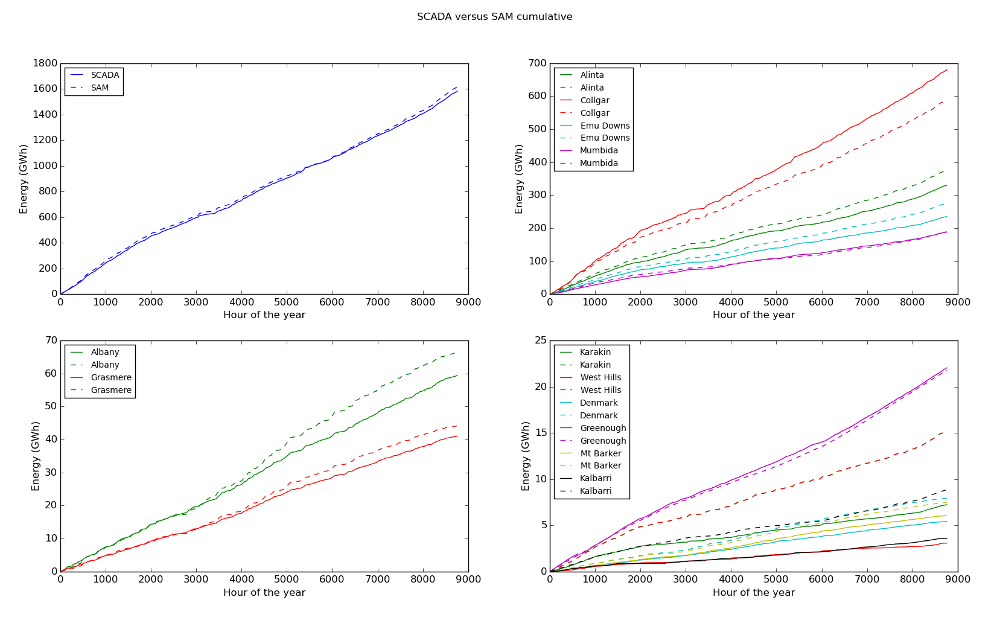

SIREN Help
All acronyms used in this help are defined in the list of acronyms
SIREN - SEN's Interactive Renewable Energy Network tool
The SEN SAM simulation, SIREN, is used to calculate energy generation for renewable energy power stations. The program uses the SAM SDK API for energy calculations. SAM is provided by the NREL. This help briefly describes how to use the simulation.
Contents
Overview
Welcome to SEN's renewable energy conceptual simulation - SIREN.
The worlds renewable energy resources could provide many times the amount of fossil-fuelled energy currently used. SEN's computer simulation models an electricity network and allows you to create, cost and evaluate scenarios for supplying electricity using a mixture of renewable energy sources.
By placing virtual renewable energy plants around the area of interest, you will be able to determine the optimal locations to access renewable energy sources, minimise grid connection costs and meet the varying demand on the grid, while achieving the best in terms of efficiency, cost effectiveness and energy security.
This version of the Simulation uses the SAM SDK API for energy calculations. SAM is provided by the NREL.
Southern Western Australia (WA)
WA's renewable energy resources could provide many times the amount of fossil-fuelled energy currently used in the state. SEN's computer simulation models the SWIS and allows you to create, cost and evaluate scenarios for supplying our electricity using a mixture of renewable energy sources.
By placing virtual renewable energy plants around WA, you will be able to determine the optimal locations to access renewable energy sources, minimise grid connection costs and meet the varying demand on the SWIS, while achieving the best efficiency, cost effectiveness, energy security, job creation and carbon reduction for Southern WA.
Note: The default data provided with the simulation focuses on the SWIS but the program(s) have been constructed to cover any geographic area with the appropriate input files. The techniques to create the required data files is documented in Supporting Notes.
About SEN
Sustainable Energy NOW, SEN (sen.asn.au), is a not-for-profit association incorporated in Western Australia (WA) with a focus on renewable energy.
Our Definition of Sustainable Energy: “Energy that is renewable within a human lifetime and can be produced safely and equitably for all time with minimal impact on the environment and future inhabitants”. We believe this does not include nuclear power with its many unresolved issues.
Our Focus: To raise awareness of how a mix of renewable energy technologies are able to meet WA's energy needs, with a particular focus on the main electricity grid, the SWIS.
Our Computer Simulation (SIREN): To demonstrate how electricity demand on the SWIS may be met by a mix of renewable energy sources. Users are able to explore potential location and scale of renewable energy sources (stations, storage, transmission) to meet electricity demand.
Back to top
Installation
At present there is a packaged version of the simulation for Windows (don't know why only Windows because I'm a Linux fan; the package has been created with PyInstaller). To execute the simulation open siren.exe in the upper folder, siren. You can easily set up a Desktop shortcut to point to the model. The package contains a number of folders with default files that can be replaced with your own. The location of these files are defined in a Preferences file as documented in Preferences. The default files are located in the following folders:
- sample_files contains a range of files to enable operation of the simulation
- sam-sdk contains a Windows version of the SAM SDK, sam-sdk-2015-06-30
- solar_weather (if present) contains solar (.smw) weather files for the SWIS for 2014 and 2015
- source contains the Python source programs for SIREN
- wind_weather (if present) contains wind (.srw) weather files for the SWIS for 2014 and 2015
When you open SIREN you will be presented with a list of SIREN Models (Preferences files). Choose the SIREN Model you want by clicking on your choice. If want to use a specific Preferences file you can open the simulation passing the alternate file name as a parameter, for example:
If you want to create a new Model press the New Model button on the start up menu. You will be presented with a small list of Properties to update to create a new Preferences file. Many of these properties relate to files and file locations as described in Setting Up. It's important to ensure they're correct for the new model to open. For the file fields click on the field to navigate to the desired file or folder. At the bottom of the Create Preferences file menu you have options to Save the new file, Save the new file and edit it, or Save it and open (launch) the new model.
Experimental features
There are some experimental features in SIREN which may or may not be further developed. These are identified within this help by a red bounding box.
Back to top
Setting Up
The simulation uses external “data files” to model the potential for renewable energy generation for a geographic region. The approach is to model the data on an hourly basis for a desired year (ignoring leap days, that is, 8,760 hours). The following data files are required / desirable. Due to the initial source for each data file the format for each is different (see SIREN File Formats for further details). Please feedback any desired formats as it's relatively easy to accommodate standard file formats.
- A map of the area of interest (identified in the [Map] Section of the Preferences file). A simple JPEG or PNG image is fine although most conventional image formats should be acceptable. The map covers a geographically rectangular area of the earth. Obtaining a suitable map image is described in Obtaining a Suitable Map Image
- Names and locations of towns. Two files are used as input (either or both can be specified):
- An Excel file containing a list of weather stations from the BOM (identified by bom property of the [Files] Section of the Preferences file)
- A CSV file containing the location of additional towns or localities (identified by towns property of the [Files] Section of the Preferences file)
- Names, technologies and locations of existing power stations (identified by grid_stations property of the [Files] Section of the Preferences file). This is either a CSV or Excel file which contains details of existing Facilities (Stations) registered with the local electricity regulator (AEMO in the case of the SWIS) augmented by geographic location of the station and details on turbines for wind farms. The CSV file may be either a specific format or a normal scenario file. You can update this file for the SWIS as described in Obtaining Current SWIS Facilities.
You can also create additional stations, such as Rooftop PV, to be included in the list of existing stations by creating an additional Stations file and setting the grid_stations2 property in the [Files] Section of the Preferences file
- A layout of the existing electrical grid. A KML file showing the layout of the major power lines in the grid and an outline of the network (SWIS) boundary. This should be a simplified version of the grid network with all lines connecting exactly for SIREN to correctly connect new stations into the grid
Note: The intention of these two files is to describe the existing fossil and renewable Stations on the electricity network
- Hourly load details for the electricity grid. A simple CSV file with a single column of electrical load data for the 8,760 hours in the year of interest (identified by load property of the [Files] Section of the Preferences file)
- Hourly solar and weather details for the area of interest (identified by solar_files and wind_files properties of the [Files] Section of the Preferences file). This data is in formats required for input to SAM and contains entries for the 8,760 hours in the year of interest. A SAM weather file is a text file that contains one (calendar) year's worth of data describing the solar resource, wind speed, temperature, and other weather characteristics at a particular location. The approach we have adopted is to use NASA MERRA-2 data for the desired geographic area and year to create appropriately formatted weather files. This is described in Obtaining and Using NASA MERRA-2 Data for SAM. To enable more recent (part-year) data to be used it is possible to “wrap” the data by using the weather data for the prior year for the remaining part of the year.
You can also use TMY files such as those provided with SAM. If you have a number of weather files you can create an index of these files for SIREN. This is described in Using other Weather Files
- SIREN allows you to visualise renewable resource attributes. This utilises a summary file to avoid having to process all the weather files covered by the map (identified by resource_grid property of the [Files] Section of the Preferences file). This is described in Visualising Renewable Resource Attributes
You can successfully use the simulation with just the map and weather data while existing load and network data enhance it's usefulness.
Back to top
Simulation Objects
The simulation has two main objects, stations and grid lines. Stations can be saved as scenarios in either an Excel or CSV file format while grid lines are constructed during the simulation rather than being saved to a file (unless you have manually created the grid line).
Stations
Stations represent either existing generation stations on the grid or new ones you have created during a simulation session. The station files can be updated outside of the simulation. The fields for a station are:
| Station Name |
The name you assigned to the station. They must be unique within a simulation session. If you add a new scenario with a station that has the same name as one already active the program will append a number to make the name(s) unique |
| Technology |
One of the defined technologies:- Biomass, Fixed PV, Geothermal, Solar Thermal, Rooftop PV, Tracking PV, Wind (refer to SAM Models used by SIREN), and
|
| Latitude |
Southern latitudes are negative |
| Longitude |
Western longitudes are negative |
| Maximum Capacity (MW) |
Maximum capacity of the station. This is the amount of power the station produces for export into the network |
| Turbine |
The type of turbine for a Wind station. The name must be either one of the turbines in the Turbine file provided by SAM or the name of a turbine power (.POW) file |
| Rotor Diam |
The rotor diameter of the turbine for a Wind station |
| No. turbines |
The number of turbines in the wind farm |
| Area |
The estimated area for the station. This is (currently) calculated by the simulation so you need not enter a value. Stations will be displayed on the map with either a square or circle representing their physical footprint (the shape can be set by setting station_shape in the [Grid] Section of the Preferences file) |
| Power File |
If the technology you're interested in is not available in the simulation or you encounter problems you can provide your own power file which contains power output for each hour of the year. This can be produced using SAM itself. Within SAM you display output data, select the Hourly energy data and export the file as either CSV or Excel, and place the file in the same location as your scenario files. When the Power Model is run the program will use this data rather than invoking the SAM module for that station |
| Storage Hours |
The number of hours of storage for Solar Thermal stations. If the value isn't set SIREN will use the tshours property in the [Solar Thermal] Section of the Preferences file |
| Grid Line |
If you have edited the grid line for a station (see Right Mouse Click) this will record the coordinates for the grid line as a series of latitude, longitude values |
| Direction |
For PV stations you can specify the direction in which the panels are facing as a character representation of the direction. Acceptable values are:- N, NNE, NE, ENE, E, ESE, SE, SSE, S, SSW, SW, WSW, W, WNW, NW or NNW. The default is N for southern latitude stations and S for northern latitude (that is, towards the midday sun) |
When you display a Station with SIREN it will also show the Scenario the Station is in. For new Stations (i.e. not Existing) it is possible to update this value to one of the other scenarios that are currently “open“. This will move the Station into that scenario and, if the scenario is saved move it permanently into that Scenario.
Grid Lines
Grid lines connect new stations to either existing or other new grid lines. By default the grid line will connect a station to the nearest point on the grid. You can edit a grid line if you wish to connect it elsewhere in the grid. Grid lines are recalculated when you add or modify stations but are not normally saved. You can, however, list the (new) grid lines and save the table listed. The fields for a grid are:
| Name |
The name of the station the grid line connects from |
| Coordinates |
Coordinates for the start and end of the grid line as latitude, longitude values |
| Dispatchable |
If the grid connects “dispatchable” technology this will be set to Y |
| Length |
The length of the grid line |
| Line Cost |
The estimated cost of the grid line. This is based upon the length and type of line(s) |
| Line Table |
This describes the type and number of grid line types for this line. A grid line in the simulation may represent a number of different grid lines to enable the peak load to be carried. The grid line types are described below |
| Peak Dispatchable |
The sum of capacities for dispatchable stations connected to/by this grid line |
| Peak Load |
The sum of capacities for all stations connected to/by this grid line |
| Peak Loss |
An estimate of the peak loss for the line. This is calculated by applying the grid loss value to the sum of all station capacities connected to/by this grid line |
| Substation Cost |
There are a range of costs related to the infrastructure at both ends of the line. We'll use the term substation_costs to embrace all these costs. Each line that ultimately ends up reaching the load centre will have a peak load for all stations that follow that particular path to the load centre. These lines will have substation costs based upon the peak load. The costs will/may be allocated across all stations in the path |
Types of Grid Lines
A grid is built up of a number of different types of line to enable differing loads to be carried. Each line has a maximum carrying capacity. Greater loads require additional lines to be added; so in this simulation one line may represent multiple grid lines as described in the Line Table for the line. For dispatchable transmission we need an extra path for backup purposes (N-1) while no such backup is required for non-dispatchable loads (N-0). For a line carrying both we'll use a criteria of N-0 for total load plus N-1 for dispatchable load. Within this simulation line types and costs can be specified (somewhat cryptically) in the [Grid] Section of the Preferences file. The default set of lines are:
|
| non-Dispatchable |
Dispatchable |
| Power range (MW) |
Line Type(s) |
Cost per Km |
Substation Cost |
Line Type(s) |
Cost per Km |
Substation Cost |
| 0 - 250 |
220_s |
$0.6M |
$7.0M |
220_d |
$0.9M |
$8.0M |
| 250 - 500 |
330_s |
$1.0M |
$8.0M |
330_d |
$1.5M |
$10.0M |
| 500 - 1,000 |
330_d |
$1.5M |
$10.0M |
330_d + 330_s |
$2.5M |
$18.0M |
| 1,000 - 1,500 |
330_d + 330_s |
$2.5M |
$18.0M |
330_d x 2 |
$3.0M |
$20.0M |
Above 500MW it's a case of alternately adding 330_s and 330_d costs.
Back to top
Preferences
Many options can be specified by a Preferences file. When you open SIREN you will be presented with a list of available Preferences files (SIREN Models) to choose from. These files (must) reside in the same directory as the SIREN itself.
The format is similar to a Windows INI file. If you want to create a new Model you can press the New Model button on the start up menu. You will be presented with a small list of Properties to update to create a new Preferences file.
The Preferences file has the following Sections and properties. The file is a simple text file which must be saved in the siren folder and have a file type of .ini (INI File). The sample siren_default.ini or siren_windows_default.ini file will provide a useful guide as to the content.
There are three special strings which will be replaced in the Files properties variables:
- $USER$ will be replaced with the current userid
- $YEAR$ will be replaced with the base year value
- $dirn will be replaced with the corresponding variable from the [Parents] Section
(Skip to Menus)
Shortcut to Sections:- Base, Biomass, Colors,
Files, Financial, Fixed PV,
Fossil Coal, Fossil Cogen, Fossil Gas,
Fossil Mixed, Geothermal, Grid,
Hydro, Map, Other, Parents,
Power, PV, Rooftop PV,
SAM Modules, Solar Thermal, Storage,
Tracking PV, View, Wave, Wind,
Windows.
| Section |
Properties |
| [Base] |
Base properties are:
| existing |
Include/exclude existing power stations on startup |
| name |
A brief name for the model represented by this Preferences file |
| year |
Year of interest |
| years |
Specify the range of years available for processing. This can be specified as a list separated by commas and/or a range of years separated by a hyphen. For example, 2008, 2010-2015 |
|
| [Biomass] |
Specifics on Biomass characteristics. Properties are:
| area |
Estimated area in km2 per MW |
| capital_cost |
Capital cost per peak MW. A suffix of K indicates thousands and M millions |
| fuel_cost |
Fuel cost per tonne (of biomass) |
| icon |
Icon to display for this technology. Default is biomass_g.png |
| multiplier |
Multiply the station capacity by this value to simulate the appropriate level of feedstock. A figure of between 8.2 and 8.5 gives Capacity Factors between 0.65 and 0.92 |
| o_m_cost |
Operations and Maintenance cost per peak MW. A suffix of K indicates thousands and M millions |
|
| [Colors] |
Colours for things. It is possible to have different colours for different maps by appending the map_choice value to Colors, e.g. [Colors1]. It is possible to edit colours and save the changes via a menu option. Standard colours are:
white, black, red, darkRed, green, darkGreen, blue, darkBlue, cyan, darkCyan, magenta, darkMagenta, yellow, darkYellow, gray, darkGray, lightGray and transparent; or you can use #rrggbb to specify red-green-blue HTML colour shades.
Colour properties are:
| background |
Colour for the background surrounding the map |
| border |
Provide a border colour for station circles |
| fossil_name |
| grid_boundary |
| grid_trace |
The colour for tracing a grid connection |
| new_grid |
Additional grid lines for new stations |
| ruler |
Colour for the ruler and legend text. If you specify a value of guess the ruler should display white on dark and black on light (but it's not perfect) |
| station |
| station_name |
| town |
| town_name |
There are colours for each of the energy technologies:
| biomass |
| fixed_pv |
| geothermal |
| rooftop_pv |
| solar_thermal |
| tracking_pv |
| wave |
| wind |
| fossil |
| fossil_coal |
| fossil_cogen |
| fossil_distillate |
| fossil_gas |
| fossil_mixed |
There are colours used for the electricity grid transmission lines. The values are in part defined by the elements of the grid KML files as described in SIREN File Formats:
| grid_<line_capacity> for the grid network used by SIREN |
| grid2_<line_capacity> for the detailed grid network not used by SIREN |
There are colours used for the resource grids:
| dhi_high |
| dhi_low |
| dni_high |
| dni_low |
| ghi_high |
| ghi_low |
| temp_high |
| temp_low |
| wind_high |
| wind_low |
| wind50_high |
| wind50_low |
There are colours used for non-technology plot items:
| cumulative |
| gross_load |
| load |
| shortfall |
|
| [Files] |
Files and directories. Properties are:
| about |
About file |
| actual_power |
File containing actual generation data. If the actual property in [Power] is True generation data will be derived from this file rather than using SAM. The files must reside in the scenarios folder |
| bom |
List of BOM weather stations in WA |
| data_file |
File to save power output if the save_data property in [Power] is True |
| grid_boundary |
Electricity network (SWIS) boundary file (KML file) |
| grid_network |
Schematic of Electricity network (KML file). This version of the network is used by SIREN to connect new stations into the network. This should be a very simple version of the grid with all network lines accurately connected |
| grid_network2 |
Schematic of Electricity network (KML file). This version of the network can be used to provide a more detailed view of the actual network. It isn't used by SIREN |
| grid_stations |
List of power stations on the grid. These stations will be identified as Existing. For the SWIS Grid these are obtained from AEMO (http://data.wa.aemo.com.au/#facilities) |
| grid_stations2 |
Additional power stations you want to include in the set of Existing stations. This can cater for such things
as embedded solar - Rooftop PV - installed on the grid but not registered with AEMO |
| help |
Help file |
| load |
Hourly load data for the grid. For the SWIS Grid these are obtained from AEMO Operational Load data (http://data.wa.aemo.com.au/#load-summary) |
| pow_files |
Location of turbine power curve files for those not in SAM's file |
| resource_grid |
File to assist with showing the resource grid |
| sam_sdk |
Location of SAM SDK folders |
| sam_turbines |
SAM's turbine file; including power curves |
| scenario |
Default initial scenario |
| scenarios |
Location of and file name prefix for scenarios of additional/proposed renewable power stations. The value should end with an * (e.g. Scenario* and all scenarios must start with this value (less the *) |
| solar_files |
Location of solar (.smw) weather files. If there is no solar_index file the file name must includes the geographic location of the file to enable a search for the file nearest to a location. The format is <location_latitude_longitude_year.smw> |
| solar_index
| An index of file names and geographic locations for solar weather files. If specified this will be used to find the nearest solar weather file to a location |
| towns |
List of towns in WA. Augments list of BOM weather stations |
| variable_files |
Location of SAM module default variables files |
| wind_files |
Location of wind (.srw) weather files. If there is no wind_index file the file name includes the geographic location of the file - <location_latitude_longitude_year.srw> |
| wind_index |
An index of file names and geographic locations for wind weather files. |
| |
Rainfall (experimental) |
| rain_files |
Location of rainfall weather files. The file name includes the geographic location of the file - <location_latitude_longitude_year.csv> |
|
| [Financial] |
Financial options. When running the financial Power Models you will be presented with this list of properties. They can be altered and saved. Properties are:
| analysis_period |
Analysis period in years (e.g. 30) |
| bid_price_esc |
PPA escalation (Price escalation). Can be suffixed with % for readability, for example, 0% |
| debt_fraction |
Debt fraction. Can be suffixed with % for readability, for example, 0% |
| depr_fed_sl_years |
Federal depreciation straight-line Years (e.g. 20) |
| depr_fed_type |
Federal depreciation type. 2 = straight line |
| federal_tax_rate |
Federal Tax Rate. Can be suffixed with % for readability, for example, 30% |
| grid_costs |
Include Grid costs in LCOE calculations for financial models. This only includes the cost of the grid to connect the station into the main grid and for the capacity of the station |
| grid_losses |
Reduce power figures by the amount of grid losses before running financial models |
| grid_path_costs |
Include Grid path costs in LCOE calculations for financial models. This includes the cost of the grid to connect the station to the load centre for the capacity of the station. At present it excludes substation costs. This option may over-inflate grid costs as each station path to the load centre is traced individually |
| inflation_rate |
Inflation rate. Can be suffixed with % for readability, for example, 0% |
| insurance_rate |
Insurance rate. Can be suffixed with % for readability, for example, 0% |
| loan_rate |
Loan rate. Can be suffixed with % for readability, for example, 0% |
| loan_term |
Loan term in years (e.g. 0) |
| market |
Utility IPP (0) or Commercial PPA (1) |
| min_dscr_target |
Minimum required DSCR (e.g. 1.4) |
| min_dscr_required |
Minimum DSCR required (e.g. 1) |
| min_irr_target |
Minimum required IRR. Can be suffixed with % for readability, for example, 15% |
| optimize_lcoe_wrt_debt_fraction |
Optimise LCOE with respect to debt percent (e.g. 0) |
| optimize_lcoe_wrt_ppa_escalation |
Optimise LCOE with respect to PPA escalation (e.g. 0) |
| positive_cashflow_required |
Positive cash flow required. 1 = yes |
| ppa_escalation |
PPA escalation ??. Can be suffixed with % for readability, for example, 0.6% |
| real_discount_rate |
Real discount rate. Can be suffixed with % for readability, for example, 0% |
| salvage_percentage |
Salvage percentage. Can be suffixed with % for readability, for example, 0% |
|
| [Fixed PV] |
Specifics on Fixed PV characteristics. Properties are:
| area |
Estimated area in km2 per MW |
| capital_cost |
Capital cost per peak MW. A suffix of K indicates thousands and M millions |
| dc_ac_ratio |
DC to AC ratio. Default value is as specified in the [PV] Section |
| icon |
Icon to display for this technology. Default is solar_pv_g.png |
| o_m_cost |
Operations and Maintenance cost per peak MW. A suffix of K indicates thousands and M millions |
|
| [Fossil Coal] |
Specifics on Fossil Coal characteristics. Properties are:
| area |
Estimated area in km2 per MW |
| capital_cost |
Capital cost per peak MW. A suffix of K indicates thousands and M millions |
| icon |
Icon to display for this technology. Default is fossil_g.png |
| o_m_cost |
Operations and Maintenance cost per peak MW. A suffix of K indicates thousands and M millions |
|
| [Fossil Cogen] |
Specifics on Fossil Cogeneration characteristics. Properties are:
| area |
Estimated area in km2 per MW |
| capital_cost |
Capital cost per peak MW. A suffix of K indicates thousands and M millions |
| icon |
Icon to display for this technology. Default is fossil_g.png |
| o_m_cost |
Operations and Maintenance cost per peak MW. A suffix of K indicates thousands and M millions |
|
| [Fossil Gas] |
Specifics on Fossil Gas characteristics. Properties are:
| area |
Estimated area in km2 per MW |
| capital_cost |
Capital cost per peak MW. A suffix of K indicates thousands and M millions |
| icon |
Icon to display for this technology. Default is fossil_g.png |
| o_m_cost |
Operations and Maintenance cost per peak MW. A suffix of K indicates thousands and M millions |
|
| [Fossil Mixed] |
Specifics on Fossil Mixed fuel characteristics. Properties are:
| area |
Estimated area in km2 per MW |
| capital_cost |
Capital cost per peak MW. A suffix of K indicates thousands and M millions |
| icon |
Icon to display for this technology. Default is fossil_g.png |
| o_m_cost |
Operations and Maintenance cost per peak MW. A suffix of K indicates thousands and M millions |
|
| [Geothermal] |
Specifics on Geothermal characteristics. Properties are:
| area |
Estimated area in km2 per MW |
| capital_cost |
Capital cost per peak MW. A suffix of K indicates thousands and M millions |
| icon |
Icon to display for this technology. Default is hot_rocks_g.png |
| o_m_cost |
Operations and Maintenance cost per peak MW. A suffix of K indicates thousands and M millions |
|
| [Grid] |
Grid properties are:
| cost_existing |
If set to True grid costs will include costing the existing grid. Thus, you can assume the existing grid is at capacity and allow a new grid to be built that follows the same corridors |
| dispatchable |
The list of technologies to be treated as “dispatchable”. These technologies may require a more robust transmission line. The list is:- pumped_hydro, geothermal, biomass, solar_thermal |
| d_lines |
Defines a table for grid lines to support varying amounts of peak dispatchable power. It defines dispatchable transmission line types for increasing loads of peak dispatchable power. It uses the table defined by line_costs to produce lines types and costs. The format of each entry is (peak_power=line_types) to define the maximum power for each set of line types. Entries are enclosed in brackets. You can also specify a loop to create a table of increasing values. Example: (250=220_d),(for(n=1,10,(n*1000-500=330_d*n),(n*1000=330_d*n + 330_s))) will create the dispatchable line cost entries in Types of Grid Lines up to a maximum of 10,000MW |
|
line_costs |
A list of the line types and their costs per Km separated by commas. A suffix of K indicates thousands and M millions. Example: (220_s=0.6M, 220_d=0.9M, 330_s=1.0M, 330_d=1.5M) describes the lines in Types of Grid Lines |
|
line_loss |
Line loss percentage per 1,000 kilometres. Can be suffixed with % for readability, for example, 6.93% |
|
load_centre |
To assist with tracing grid lines for a station you can specify “load centres” where a grid could connect towards (not yet to). This is a series of latitudes and longitudes separated by commas. You can also precede the coordinates with a name for the centre, for example (Perth, -31.9231, 115.8840). The geographic location of the load centre also needs to be included in the coordinates for the network lines (as defined in the grid_network file) |
| s_lines |
Defines a table for grid lines to support varying amounts of peak non-dispatchable power. It defines non-dispatchable transmission line types for increasing loads of peak power. It uses the table defined by line_costs to produce lines types and costs. The format of each entry is (peak_power=line_types) to define the maximum power for each set of line types. Entries are enclosed in brackets. You can also specify a loop to create a table of increasing values. Example: (250=220_s),(500=330_s),(for(n=1,10,(n*1000=330_d*n),(n*1000+500=330_d*n + 330_s))) will create the dispatchable line cost entries in Types of Grid Lines up to a maximum of 10,500MW |
| substation_costs |
A list of the line types and their substation costs separated by commas. A suffix of K indicates thousands and M millions. Example: (220_s=7M, 220_d=8M, 330_s=8M, 330_d=10M) describes the lines in Types of Grid Lines |
| substation_loss |
Losses associated with substation infrastructure. Can be suffixed with % for readability, for example, 0.62% |
| trace grid |
If set to True this option will cause the model to trace grid connections as far back as possible and add this downstream capacity to peak load for each grid line |
| trace_existing |
If set to True this option will cause the model to trace grid connections for existing stations as well. If there are a large number of existing stations (and a complex grid) this can take a long time to process |
|
[Hydro]
(experimental) |
Specifics on Hydrothermal characteristics (experimental). Properties are:
| area |
Estimated area in km2 per MW |
| capital_cost |
Capital cost per peak MW. A suffix of K indicates thousands and M millions |
| cf |
Capacity Factor. As SAM does not have a model for Hydro the approach SIREN uses is to simulate power generation using a capacity factor to produce a “straight line” power output |
| icon |
Icon to display for this technology. Default is hydro_g.png |
| o_m_cost |
Operations and Maintenance cost per peak MW. A suffix of K indicates thousands and M millions |
|
| [Map] |
Details on the map including geographic boundaries. Properties are:
| map |
Map file showing area of interest. The map can be any graphic image, even a blank image such as provided in the sample files as blank.jpg |
| map_choice |
It is possible to choose one of a number of maps using the map_choice parameter. Properties suffixed with the map_choice value will override the default values. For example, map_choice=1 will use values from map1 etc. and will use colours from the [Colors1] section. It is also possible (in fact may be the only thing that works) to suffix the map properties with the map_choice value to provide a value for each map
|
| projection |
Map projection such as EPSG:3857. EPSG:3857 (WGS 84 / Popular Visualisation Pseudo-Mercator) is a Spherical Mercator projection coordinate system popularised by web services such as Google and later OpenStreetMap. It allows an area of the earth to be projected as a rectangle |
| lower_right |
lower right corner of the map in format latitude, longitude. Suffixed by map_choice. For example, map_choice=1 will use lower_right1 |
| lower_right<map> |
lower right corner of the map for map_choice=map in format latitude, longitude |
| scale |
Scale of renewable station areas. True=scale renewable station areas to true size; False=display as a standard size |
| upper_left |
Upper left corner of the map in format latitude, longitude. Suffixed by map_choice. For example, map_choice=1 will use upper_left1 |
| upper_left<map> |
Upper left corner of the map for map_choice=map in format latitude, longitude |
|
| [Parents] |
Enables parent directories to be specified and substituted in the [Files] properties. The variables must be in lower case. It is suggested they have an unusual character, such as $, to avoid valid values being substituted
| $samsdk |
Example: pointer to location of SAM SDK folders |
|
[Other]
(experimental) |
Specifics on another technology as defined by you (experimental). You can cater for different technologies by appending a suffix to Other, e.g. [Other1]. Refer to Other Models used by SIREN (experimental) for more details. Standard Properties are:
| area |
Estimated area in km2 per MW |
| capital_cost |
Capital cost per peak MW. A suffix of K indicates thousands and M millions |
| formula |
Formula to calculate the power generated for each hour |
| icon |
Icon to display for this technology. Default is question.png |
| o_m_cost |
Operations and Maintenance cost per peak MW. A suffix of K indicates thousands and M millions |
|
| [Power] |
What processing, output and plots to produce for power model processing. Properties are True or False. Power options can be changed and saved when the Power Models menu option is selected. Properties are:
| actual |
If True, generation data will be derived from actual power data rather than calculated using a SAM model |
| block |
If True, plots will be displayed individually. Each plot will have to be closed before the next one will display |
| by_day |
Display plots of daily results, that is, a figure for each day |
| by_month |
Display plots of monthly results, that is, a figure for each month |
| by_period |
Display plots of period results. The periods are defined by the period<n> properties. These are typically two six month seasons. As SAM data files cover a calendar year one period may include the first n month(s) and last m month(s) of the year. Each month covers the first to last day of the month |
| by_season |
Display plots of seasonal results, that is, a figure for each season. The seasons are defined by the season<n> properties. These are typically the four three month seasons. As SAM data files cover a calendar year the summer or winter figures will include the first n month(s) and last m month(s) of the year |
| by_station |
Display plots for individual stations |
| cumulative |
Include a cumulative curve for renewables |
| duration |
Display load duration curves |
| financials |
Run SAM financial models on the power results produced |
| fossil_technologies |
The list of fossil technologies - fossil_coal fossil_cogen fossil_distillate fossil_gas fossil_mixed |
| grid_losses |
Reduce plot figures by the amount of grid losses |
| gross_load |
Create additional load curve which includes Rooftop PV. This increases load to simulate the hidden capacity/demand being met by Rooftop PV |
| hour |
Display plots of hourly results |
| load_growth |
Default annual load growth when looking into the future. Can be suffixed with % for readability, for example, 2% |
| maximise |
Maximise plot windows |
| month |
Display plots of the average 24 hour period for each month |
| other_width |
Line width for non-technology plot items (Cumulative generation, Load and Shortfall). Default value is 2.0 (twice normal width)
|
| period |
Display plots of the average 24 hour period for the periods defined by the period<n> properties.
|
| period<n> |
The months covered by period n. The format is <period_name>,n1,n2,...n6 for month n1 through n6. For example, period2=Summer,11,12,1,2,3,4 names the second period Summer and covers November to December plus January to April
|
| save_data |
Save data outputs produced by the model |
| season |
Display plots of the average 24 hour period for the seasons defined by the season<n> properties
|
| season<n> |
The months covered by season n. The format is <season_name>,n1,n2,...n3 for month n1 through n3. For example, season1=Summer,12,1,2 names the first season Summer and covers December, January and February
|
| shortfall |
Display shortfall of network load not met by renewable generation |
| shortfall_detail |
Display additional shortfall graphs and data to assist detailed analysis of generation shortfall |
| shortfall_iterations |
Choose the number of iterations for the additional shortfall graphs |
| show_load |
Display network load on plots |
| show_menu |
Present a menu to specify what processing and plots to produce. This option should also be set to True to enable choices on plots, tables and financial options |
| summary |
Present a table summarising power produced |
| technologies |
The list of technologies - biomass, fixed_pv, geothermal, rooftop_pv, solar_thermal, tracking_pv, wind |
| total |
Display plots of the average 24 hour period for the full year |
|
| [PV] |
Specifics on PV characteristics. Properties are:
| dc_ac_ratio |
DC to AC ratio. Default value is 1.1 |
| icon |
Icon to display for this technology. Default is solar_pv_g.png |
|
| [Rooftop PV] |
Specifics on Rooftop PV characteristics. Properties are:
| area |
Estimated area in km2 per MW. A value of 0 is acceptable |
| capital_cost |
Capital cost per peak MW. A suffix of K indicates thousands and M millions |
| dc_ac_ratio |
DC to AC ratio. Default value is as specified in the [PV] Section |
| icon |
Icon to display for this technology. Default is solar_pv_g.png |
| o_m_cost |
Operations and Maintenance cost per peak MW. A suffix of K indicates thousands and M millions |
|
| [SAM_Modules] |
SAM models (modules) and default variables for each technology currently implemented. The variables files can be either CSV or Excel files. Properties are:
| annualoutput_variables |
Default values required for the annual output module. This is the first of two models used to determine the financial aspects of the simulation. It calculates annual output for the analysis period |
| biomass_variables |
Default values required for the biomass module |
| ippppa_variables |
Default values required for the Utility IPP/Commercial PPA Finance module. This is the second of the financial models for the simulation |
| pv_variables |
Default values required for the three PV technologies (Fixed, Tracking, Rooftop) |
| solar_thermal_variables |
Default values required for the solar thermal module |
| wind_variables |
Default values required for the wind module |
|
| [Solar Thermal] |
Specifics on Solar Thermal characteristics. Properties are:
| area |
Estimated area in km2 per MW |
| capital_cost |
Capital cost per peak MW. A suffix of K indicates thousands and M millions |
| gross_net |
Estimated gross to net power conversion factor |
| icon |
Icon to display for this technology. Default is solar_g.png |
| o_m_cost |
Operations and Maintenance cost per peak MW. A suffix of K indicates thousands and M millions |
| tshours |
Hours of storage. The default is 0 |
| volume |
Storage volume in m3 per MW per hour of storage. Default is 12.9858 |
|
| [Storage] |
Specifics on (generic) storage characteristics. Properties are:
| discharge_eff |
Losses incurred in discharging storage. It is a percentage value, e.g. 0.05 means 5% |
| discharge_max |
The maximum amount of storage in MW(h) that can be added to address generation shortfall |
| recharge_eff |
Losses incurred in recharging storage. It is a percentage value, e.g. 0.05 means 5% |
| recharge_max |
The maximum amount of excess generation in MW(h) that can be added to storage |
| storage |
Specify how large the storage on the grid is; in GWh. This can be a single figure indicating the amount of storage or two figures separated by a comma where the second value specifies the initial storage value |
|
| [Tracking PV] |
Specifics on Tracking PV characteristics. Properties are:
| area |
Estimated area in km2 per MW |
| capital_cost |
Capital cost per peak MW. A suffix of K indicates thousands and M millions |
| dc_ac_ratio |
DC to AC ratio. Default value is as specified in the [PV] Section |
| icon |
Icon to display for this technology. Default is solar_pv_g.png |
| o_m_cost |
Operations and Maintenance cost per peak MW. A suffix of K indicates thousands and M millions |
|
| [View] |
Default view options. Often these are True or False values that can be “toggled” in the model. Properties are:
| capacity |
Show station areas based upon capacity. The size of the circles is determined by the capacity of the station and the capacity_area value. The intent is to highlight generation based upon capacity. There is an additional option to display circles based upon generation. These circles can be displayed once the Power Model has been run. They are, again, based upon the capacity_area value reduced to provide circles of the same magnitude as the capacity circles. These circles can be toggled on or off. When both are off station areas will be displayed |
| capacity_area |
Size of Capacity circles in km2 per MW |
| capacity_fill |
For capacity circle either display just the boundary (False) or fill the whole area (True). It is also possible to display a partially opaque circle by specifying a value between 0 (clear) and 1 (opaque) |
| centre_on_click |
If True then centre on nearest station on left-click |
| existing_grid |
Display existing grid lines |
| fossil |
Show fossil generators |
| group_colours |
If set to True when you invoke the Edit Colours menu item colours will be grouped into a number of sections:- Fossil Technologies, Grid, Map, Plot, Resource, Technologies, and any others. The default is False |
| leave_help_open |
If set to True this will open the help in your browser rather than within SIREN |
| line_width |
Width of grid lines on the map in pixels. A line width of zero indicates a cosmetic pen. This means that the pen width is always drawn one pixel wide, independent of the level of zoom. This is the default. A value > 0 will show lines at this width irrespective of the size of the map. A value < 1 and > 0 will be used to calculate the number of pixels by multiplying the width of the map image by this value. A useful value is 0.0016. For example a map image 12,000 pixels wide will have grid lines 19.2 pixels wide |
| menu_background |
Two icons (toggle ticks and grid network) can be lost in the windows menu background colour. If you set menu background to any value other than b these icons will be replaced with black ones which will show up more clearly |
| new_grid |
Include grid lines for new power stations |
| progress_bar |
Display progress bar for power calculations; if numeric then only display the bar if there are at least this many stations |
| resource_max_steps |
Maximum number of colour steps for resource grids. Default value is 10 |
| resource_opacity |
Opacity of Resource grid. A value between 0 (clear) and 1 (opaque) |
| resource_period |
Initial resource period to be displayed when Resource grid displayed |
| resource_steps |
Number of colour steps for resource grids |
| resource_variable |
Initial resource variable to be displayed when Resource grid displayed |
| ruler |
Length of ruler in kilometres in format or length, ticks where length specifies the total length of the ruler and ticks ticks indicates the length of tick marks along the ruler |
| show_towns |
Display towns. Default is True |
| station_name |
Display station names. If False then only the nearest station name will be displayed |
| station_shape |
The shape of the station areas. The default is circles; squares can be set by setting this option to square |
| zoom_rate |
The zoom rate for the map view. Each zoom in or zoom out action will alter the displayed map by this amount. Values can be between .75 (75% or 133%) and 0.95 (95% or 105%). The default value is 0.8 |
| |
Rainfall (experimental) |
| resource_rainfall |
If set to True this will allow rainfall to appear in the resource grid and weather displays |
|
[Wave]
(experimental) |
Specifics on Wave characteristics (experimental). Properties are:
| area |
Estimated area in km2 per MW |
| capital_cost |
Capital cost per peak MW. A suffix of K indicates thousands and M millions |
| efficiency |
Conversion efficiency. Can be suffixed with % for readability, for example, 40% |
| icon |
Icon to display for this technology. Default is wave_g.png |
| o_m_cost |
Operations and Maintenance cost per peak MW. A suffix of K indicates thousands and M millions |
|
| [Wind] |
Specifics on Wind and turbine spacings. Properties are:
| area |
Multiplier to compute an area of area x number of turbines x rotor diameter2 |
| capital_cost |
Capital cost per peak MW. A suffix of K indicates thousands and M millions |
| icon |
Icon to display for this technology. Default is wind_g.png |
| o_m_cost |
Operations and Maintenance cost per peak MW. A suffix of K indicates thousands and M millions |
| offset_spacing |
Offset between adjacent rows in multiples of rotor diameter |
| row_spacing |
Distance between rows in multiples of rotor diameter |
| turbine_spacing |
Distance between turbines in multiples of rotor diameter |
|
| [Windows] |
Provides options to remember window layouts between sessions. If active these values are updated by SIREN when windows are closed. Windows will be restored as close as possible to their previous position. Properties are:
| credits_pos |
Position of Credits window |
| credits_size |
Size of Credits window |
| legend_pos |
Position of floating Legend |
| legend_size |
Size of floating Legend |
| log_pos |
Position of floating status window |
| log_size |
Size of floating status window |
| log_status |
If set to False the status messages will not be logged in the status window |
| main_pos |
Position of main window |
| main_size |
Size of main window |
| main_view |
Dimensions of map in main window view. This allows the original window to be zoomed to the approximate position on windows close |
| menu_pos |
Position of floating menu window |
| menu_show |
Display floating menu on startup (True or False). If the floating menu is active when you exit SIREN this flag will indicate to reshow it the next time you run SIREN |
| menu_size |
Size of floating menu window |
| restorewindows |
If True SIREN will remember window layouts between sessions. Default is False |
| resource_pos |
Position of Resource Overlay window |
| resource_size |
Size of Resource Overlay window |
|
Back to top
The menus allow you to interact with the full simulation while right-clicking the mouse allows you to interact at the detail of an individual station. The majority of the menu options have a keyboard shortcut. The layout of the menus are set out below (Note: Sometimes the menu options will disappear from the menu bar. The easiest solution is to maximise the main window and then restore it to it's normal size)
| Scenario |
Work with scenarios. It is possible to edit the scenarios outside of the simulation as they are simple Excel or CSV files. The type of file is indicated by the file type - .csv for a CSV file, .xls or .xlsx for an Excel file. If the file type isn't specified any scenario will be saved in Excel format.
| Open (Ctrl+O) |
Open an existing scenario. This will open the selected scenario and replace all stations in the current session with those in the chosen scenario |
| Add (Ctrl+A) |
Add an existing scenario to the current session |
 Remove Remove
...Scenario(s) |
Remove one of the open scenarios from the current model.
The Existing scenario allows you to remove existing stations from your session |
 Edit Descr. Edit Descr.
...Scenario(s) |
Edit the description for a scenario in the current model |
 Save (Ctrl+S) Save (Ctrl+S) |
Save any scenarios modified in the current model |
| Save + Desc |
Save any scenarios modified in the current model and allow descriptions to be updated |
| Save As... |
Save the current model as a new scenario |
| Exit (Ctrl+X) |
Save any modified scenarios and exit the simulation |
 Quit (Ctrl+Q) Quit (Ctrl+Q) |
Quit the simulation without saving any changes |
| Add Existing |
If you have removed Existing Stations this option will allow you to add them back |
|
| Power |
Run SAM models for the current model or list details on new infrastructure in the model
| Run SAM Power Models (Ctrl+P) |
Run SAM models for the base year for each station in the current model and display power curves for the full model |
Power for year
...years(s) |
Run the SAM Power Models for one of the years available |
| List Stations (Ctrl+L) |
List all stations in the current model. By right-clicking a column header you can sort by that column in ascending and then descending order. By left or right-clicking a station you can display the details for that station |
| List New Grid (Wires; Ctrl+W) |
List all new grid network lines in the current model. By right-clicking a column header you can sort by that column in ascending and then descending order. If [Grid] trace_existing is set existing grid lines will also be displayed |
 SAM Version SAM Version |
Display the version of the SAM SDK used by this model ([Files] sam_sdk property). Details will be shown in the status line at the bottom of the main window |
|
| View |
Modify the view of certain elements of the simulation. Those identifies with a tick icon can be toggled on or off
| Capacity Circles (Ctrl+C) |
Display circles for the stations based upon Capacity (True) or station area (False) |
| Generation Circles (Ctrl+K) |
Display circles for the stations based upon Generation (True). This will only display circles for stations that have had the Power model run for them |
| Station Names (Ctrl+N) |
Display all station names (True) or just the current one (False) |
| Fossil-fuelled Stations (Ctrl+F) |
Display fossil-fuelled stations (True) |
| Scale Ruler (Ctrl+R) |
If True Display a Scale Ruler. If you want to move the ruler you need to toggle it off and then back on again |
| Show Legend |
If True Display a legend. The legend displays coloured circles for each technology on the map and squares indicating the total land area occupied by these technologies. The legend will be placed (top) right of the map |
| Show Towns |
Display Towns (True) |
| Show Existing Grid (Ctrl+H) |
Display the existing grid network (True) |
| Show Existing Grid (Ctrl+2) |
Display the existing grid network (True) |
| Clear Grid Trace |
Clear any grid trace |
| Show Grid Line (Ctrl+J) |
The option allows you to choose an existing grid line to trace it's path |
 Refresh Grid Refresh Grid |
This is a temporary option to refresh the Grid if the grid tracing and shortest path algorithms misbehave |
| Go to Station (Ctrl+G) |
Centre the view on a particular station selected from a list |
| Go to Town (Ctrl+T) |
Centre the view on a particular town selected from a list |
| Go to Load Centre (Ctrl+M) |
Centre the view on a Load Centre |
 Save View (Ctrl+V) Save View (Ctrl+V) |
Save the current view to an image file |
|
| Preferences |
Edit or display aspects of the Preferences file. Changes for some variables will take effect immediately on exit from the edit program while others (such as the map) will require you to restart the simulation
| Edit Preferences File(Ctrl+E) |
Edit the Preferences file, either SIREN.ini or that file passed as a parameter when you invoked the simulation. This option invokes a simple text editor to allow the whole file to be edited |
| Edit Colours (Ctrl+U) |
Edit colours for the current map. This will allow to change both the default colours and the colours for the current map_choice |
| Edit Section |
Edit a specific Section of the Preferences file. You will be presented with a list of Sections to choose the desired one. The edit program will then present a table of current Properties and their values |
| Edit Technologies |
Edit standard Properties for all Technologies. This option allows you to edit the “standard” variables for all technologies (area, capital_cost and o_m_cost) |
| Dispatchable Lines Table |
This will list the dispatchable_lines table showing the range of dispatchable lines for each level of peak dispatchable capacity |
| Standard Lines Table |
This will list the standard_lines table showing the range of standard lines for each level of peak capacity |
| Line Costs |
List the cost per Km for each type of line |
| Substation Costs |
List the substation cost for each type of line |
|
| Windows |
Display additional (floating) windows. These windows can be opened and still allow interaction with the main SIREN window. if restorewindows is set SIREN will remember the placement of windows and restore them as closely as possible to these positions when they are next opened.
| Credits (F2) |
Display Credits window - brief details about SIREN, acknowledgements and licensing |
| Show Resource Grid (Ctrl+B) |
Invoke Resource Grid window to display gridded resource data on the map |
Resource for year
...years(s) |
Invoke Resource Grid window for one of the years available |
 Show Floating Legend Show Floating Legend |
Invoke Floating Legend to display a legend in a floating window |
| Show Floating Menu |
Invoke Floating menu window to display SIREN menu options |
| Show Status Window |
Invoke floating window to display a log of SIREN session activity and open scenarios |
|
| Tools |
Invoke SIREN tools. This will launch the chosen tool as a new task
|
| Help |
Display some help about the program
| Help (F1) |
Display the help file. The default help file, help.html, is a standard HTML file which can be displayed with your browser |
| About (Ctrl+I) |
Display details about the simulation including any licensing conditions |
|
Back to top
Right Mouse Click
Clicking the right mouse button allows various actions for the nearest station. Dependent on the nearest station some options will not be available. The full list is as follows:
| Run SAM Model |
Run SAM Power Model for nearest station |
| Copy station |
Copy nearest station. After selecting this option and updating any changed details move the mouse to the new location and press the left mouse button to locate the new station |
| Centre view |
Centre view on nearest station |
| Show/Edit details |
Show details for nearest station. If it is a new station you can also edit the stations details |
| Move |
Move nearest station. After selecting this option move the mouse to the new location and press the left mouse button to relocate the station |
| Delete |
Delete nearest station |
| Edit grid line for station |
Edit Grid line for station at (this) location. This option allows you to override the default process of connecting the grid line to the nearest existing grid line. By clicking the left mouse button you can indicate where you want the grid line to be positioned; each click adds a new leg to the grid line; double-clicking terminates the edit and connects the grid to the (now) nearest grid line |
| Trace grid for station |
Trace Grid for station at (this) location. This option will trace the grid connection between the station and the (nearest) load centre |
| Add station |
Add station at (this) location |
| Show weather for here |
Present a menu to allow you to plot weather values (DHI, DNI, GHI, temperature, wind speed) for this location. You select the weather values you want to display and one of a series of plots to display either by hour or the average for a period. There is also an option to display chosen plots one at a time or all together, that is, display them all and allow you to navigate between them |
| Show details |
Show details for nearest town |
| Position ruler here |
Position ruler here. Position will be approximate |
| Position legend here |
Position legend here. Position will be approximate |
Back to top
Using the Simulation
The simulation allows you to build scenarios for the energy mix for your area of interest. It is based around the map of your chosen area and allows you to visualise the layout of the existing electricity network plus the additional stations you place on the map to build your scenario(s). The map initially shows the main skeleton of the existing electricity grid infrastructure and current generation stations.
To add a new station simply right-click on the map at the desired location and then update the details for the station (Name, Technology, Capacity and so forth) and press Save & Exit. You can also copy an existing station and other options as specified above.
As you build your scenario, the simulation adds additional infrastructure to connect the new generation plants to the grid. The colours for the majority of the items on the map are as you specify in the Preferences file. You navigate around the map using normal mouse movements to scroll, zoom, etc. and interact with it as described previously (Menus). Using the various menu options you can model your whole scenario, or by right-clicking you can deal with an individual station. There are a number of additional windows, such as menu options, that can be opened to assist with using SIREN (see Windows)
You can save multiple scenarios and add them and remove them as you wish. When you exit the simulation normally or Save scenarios (Ctrl+S) any modified scenarios will be saved. When you add new stations to your model they will be added as a new scenario which includes the date and time in its name, for example, Scenario_2015-06-09_1000. You can save all open scenarios as a single new scenario by using the Save As... option.
The strength of the simulation is in running the SAM Power Models (e.g. Ctrl+P). This will run the appropriate SAM model for each station you have chosen or for all renewable stations in your current simulation. SAM calculates a list of power outputs for each hour of the year (8,760 points). If the show_menu property is True you will be presented with a menu to specify what processing and plots to produce (see below). If you choose to run the Financial Models you will be presented with an additional menu of options.
Back to top
Power Model Options
The Power Model options menu are as set out here. The default values are specified in the [Power] Section of the Preferences file. The associated property is indicated in brackets at the end of the description. If you hover over the window title bar or press F1 a help for the Options will be displayed.
| Check / Uncheck all |
A button to check or uncheck all option buttons |
| Show in Plot |
Choose what to show in the plots |
| Generation - use actual generation figures |
Use actual generation figures rather than invoking a SAM module. For example, you may have actual generation (e.g. SCADA) data that you wish to use rather than using a SAM model (actual) |
| Generation - total (cumulative renewables) |
Include a cumulative curve for renewables (cumulative) |
| Generation - from chosen stations |
Display plots for individual stations. An option to to select any number of individual stations to process. This will cause an additional menu to be presented after you press the Proceed button (by_station) |
| Generation - adjust generation |
This option allows you to adjust the generation figures for either technologies or specific stations by a defined multiplier of between 0 and 25 times. The option multiplies the figures calculated by SAM to enable analysis of changes to the technology mix to the overall simulation result without having to modify individual station(s). See Adjust Generation (below) for further details (adjust) |
| Generation - show Load |
Display network load on plots (show_load) |
| Generation - show shortfall from Load |
Display shortfall of network load not met by renewable generation (shortfall) |
| Generation - reduce generation by grid losses |
Reduce calculated generation by the amount of grid losses (substation and transmission losses) (grid_losses) |
| Add Existing Rooftop PV to Load (Gross Load) |
Create additional load curve which includes Rooftop PV. This increases the Load curve by the amount of Rooftop PV in an attempt to simulate it's contribution to load reduction (gross_load) |
| Growth options |
Options to set an annual load (demand) growth target and project a number of years into the future. This takes the existing load and increases it by the specified percentage for the number of years into the future |
| Storage |
Options related to (generic) storage within the network |
| Storage Capacity |
Options to specify how much storage is in the network, in GWh, and the initial capacity. Generation over Load will be added to storage up to this figure while generation shortfall will be met from storage until it is exhausted |
| Discharge cap |
Options to specify the maximum amount of storage in MW(h) that can be added to address generation shortfall and the losses incurred in using this storage |
| Recharge cap |
Options to specify the maximum amount of excess generation in MW(h) that can be added to storage and the losses incurred in adding this to storage |
| Choose plots |
Choose what plots to show. All plots are based upon the full year of data. Energy by options produce a step chart of generation for the chosen time frame; Power - daily average options produce a line graph of the average 24 hour period for the chosen time frame. |
| Maximise Plot windows |
Plots will display at maximum window size (show_load) |
| Show plots one at a time |
If checked chosen plots will be displayed one at a time, otherwise where possible they will be displayed all together, that is, display them all and allow you to navigate between them (block) |
| Show generation as a percentage of load |
Where possible display (renewable) percentage of load within the plot title (show_pct) |
| Energy by day |
Display plots of daily results, that is, a figure for each day (by_day) |
| Energy by month |
Display plots of monthly results, that is, a figure for each month (by_month) |
| Energy by season |
Display plots of seasonal results, that is, a figure for each season (by_season) |
| Energy by Winter-Summer |
Display plots of 6 month seasonal results (by_period) |
| Power by hour |
Display plots of hourly results (hour) |
| Power - diurnal profile |
Display plots of average 24 hour period for the full year (total) |
| Power - diurnal profile by month |
Display plots of average 24 hour period for each month (month) |
| Power - diurnal profile by season |
Display plots of average 24 hour period for each season (season) |
| Power - diurnal profile by Winter-Summer |
Display plots of average 24 hour period for the two 6 month periods (period) |
| Power - Load duration |
Display load duration curves (duration) |
| Power - Shortfall analysis |
Display additional shortfall graphs and data to assist detailed analysis of generation shortfall (shortfall_detail) |
| Choose tables |
Choose what tables to present |
| Show Summary/Other Tables |
Present a brief summary table of Capacity and Output for each selected station (summary) plus other tables dependent on options chosen |
| Save Hourly Data Output |
Save the hourly data for each renewable station. This is the hourly output calculated by the SAM model (save_data) |
| Save Powerbalance data |
Save the input data for Powerbalance. Powerbalance uses the hourly shortfalls and overall generation figures in its computations. This option saves this data in a spreadsheet to simplify copying it into a Powerbalance workbook. If you check this option it will check two options that are required for Powerbalance (‘Generation - show Load’ and ‘Generation - reduce generation by grid losses’). (save_balance) |
| Run Financial Models |
Run SAM financial models on the power results for each station and produces a summary table showing additional financial outputs (financials) |
| Proceed, Save Options / Do Financials |
At the bottom of the menu is the Proceed button. If the button is not visible use the scroll bar to navigate down the table. You can invoke the menu multiple times to specify different growth options, storage options and plots. The first display of the menu gives the option to Save the options for future sessions; this writes the updated options to the Preferences file. To exit this phase of processing press the All Done or Do Financials button |
The plots and tables are intended to assist with analysing the chosen scenario.
Plots
- Energy by ... options produce step plots that aggregate data into the chosen period
- Power by hour option produce line plots for each hour of the year
- Power - diurnal ... options produce line plots that summarise data to produce an average diurnal (daily) plot for each of the chosen periods
- Power - Load duration option produces load duration curves which show how much generation is produced for a percentage of the year
- Power - Shortfall analysis option produces a table and line plots that attempt to assist with analysing shortfalls on a daily basis. The analysis iterations option will produce average shortfalls for that number of days, for example, 3 iterations will produce average shortfall figures for one, two and three days. The figures are calculated by “averaging” the generation shortfall over the chosen number of days. This option will also produce cumulative shortfall graphs that add the average hourly shortfall to generation to attempt to flatten out the shortfall over the year
The tool used to produce the plots, matplotlib, has a navigation toolbar
(Interactive navigation) to enable you to navigate and manipulate the plot (but doesn't allow you to change the plot data). It includes options to zoom into an area of the plot and to save the plot image (by default to the scenarios folder).
Tables
- Save Hourly Data Output option will save generation in MWh for each chosen station for each hour of the year (8,760 hours). This can be used in detailed analysis or as an option to avoid having to reprocess the station in the future, by updating a Station's Power File field. The default file name can be set using the data_file property of the [Files] Section of the Preferences file; otherwise it will in the format of Power_Table_yyyy-mm-dd_hhmm...
- Save Powerbalance data option will save save the input data for Powerbalance. Powerbalance uses the hourly shortfalls and overall generation figures in its computations. This option saves this data in a spreadsheet to simplify copying it into a Powerbalance workbook. The cells required for Powerbalance are highlighted in colour. The worksheet contains the generation summary data followed by the shortfall data
- Show Summary/Other Tables option will cause various tables to be presented:
- A brief summary table of Capacity and Output for each selected station. The default file name will in the format of powermodel_Table_yyyy-mm-dd_hhmm
- If Storage values are specified a storage table is produced showing hourly figures for Load, Generation, Storage Used, Storage Losses (determined by Discharge and Recharge loss percentages), Storage Balance, Shortfall and Excess. Shortfall indicates the shortfall against Load (Load less Generation, Storage Used and Losses); Excess indicates excess generation that could not be stored due to either the Storage Capacity limit or Recharge cap. The default file name will in the format of Storage_Table_yyyy-mm-dd_hhmm
- Generation Summary table is a brief summary of the overall generation for the current execution of the Power model. The figures are summations of the 8,760 hourly figures. Some comments on the table:
- The Multiplier column indicates any multipliers from the adjust generation option (plus load if load is grown)
- The Row column is merely a technique to display the rows in a suitable order
- The initial rows are the totals for each of the technologies, followed by the total of all generation and the load to be met
- Gen. - Load is a raw indicator of generation versus load but ignoring any timing issues. A negative value indicates a shortfall in overall generation while a positive value indicates excess overall generation
- Storage Capacity is the amount of storage in this execution
- Storage Used is how much storage has been used to meet shortfall in generation for any period. This is that portion of renewable generation that has been stored and then reused
- Excess Gen. is energy generation that has been lost/dumped due to either full storage or constraints on storage recharge
- Shortfall is the lack of available energy (generation plus storage) to meet load
- The Power - Shortfall analysis Plot option produces a table showing hourly figures for Load, Generation, Shortfall, and, optionally, grid losses. If iterations are chosen an additional table showing daily shortfalls for each iteration will also be produced. The default file(s) name will in the format of Hourly Shortfall_Table_yyyy-mm-dd_hhmm and Daily Shortfall_Table_yyyy-mm-dd_hhmm
Back to top
Financial Model Options
If you have chosen to run the Financial models you will be presented with an additional options menu as set out here. The default values are specified in the [Financial] Section of the Preferences file. The associated property is indicated in brackets at the end of the description. If you hover over the window title bar or press F1 a help for the Options will be displayed.
| Analysis period |
(analysis_period) |
| Federal tax rate |
(federal_tax_rate) |
| Real discount rate |
(real_discount_rate) |
| Inflation rate |
(inflation_rate) |
| Insurance rate |
(insurance_rate) |
| Loan term |
(loan_term) |
| Loan rate |
(loan_rate) |
| Debt percentage |
(debt_fraction) |
| Federal depreciation type |
2=straight line (depr_fed_type) |
| Federal depreciation Years |
Federal depreciation straight-line Years (depr_fed_sl_years) |
| Bid Price escalation |
(bid_price_esc) |
| Salvage value percentage |
(salvage_percentage) |
| Minimum required DSCR |
(min_dscr_target) |
| Minimum required IRR |
(min_irr_target) |
| PPA escalation |
(ppa_escalation) |
| IPP option |
0=Utility IPP or 1=Commercial PPA (market) |
| Minimum DSCR required |
(min_dscr_required) |
| Positive cash flow required |
(positive_cashflow_required) |
| Optimise LCOE with respect to debt percent |
(optimize_lcoe_wrt_debt_fraction) |
| Optimise LCOE with respect to PPA escalation |
(optimize_lcoe_wrt_ppa_escalation) |
| Reduce power by Grid losses |
Reduce the power passed to the financial model by the amount of grid losses. This will slightly increase LCOE. If chosen this will reduce power by losses related to the line connecting the station into the grid. To reduce power by losses for the the full grid path length to the load centre you need to also choose the Include full grid path ... option (below) |
| Include Grid costs in LCOE |
Increase station costs by the line costs to connect the station to the grid. This only includes the cost of the line to connect the station into the main grid and for the capacity of the station |
| Include full grid path in LCOE |
Increase station costs by the line costs to connect the station to the grid. This includes the cost of the line to connect the station to the load centre for the capacity of the station. This option may over-inflate grid costs as each station path to the load centre is traced individually |
| Proceed, Save Options, All Done |
At the bottom of the menu is the Proceed button. If the button is not visible use the scroll bar to navigate down the table. You can also Save the options for future sessions; this writes the updated options to the Preferences file. The model will allow multiple iterations of the financial models. Use the All Done button to exit financial model processing |
Back to top
Resource Grids
To assist with placement of renewable energy stations SIREN can display a grid of renewable resource attributes derived from the SAM weather files. The grid can be displayed by invoking the Show Resource Grid (Ctrl+B) menu option. The Resource Overlay menu presented has the following fields:
- Weather Detail. If appropriate resource files are found you'll be presented this menu option. Possible choices are:- Daily By Month (default), Hourly By Month, or Hourly By Day. With the Hourly options you'll also have additional options to navigate to a particular month and, for By Day, day
- Weather Period. This pulldown menu allows you to select the desired period to display. Options are for the full year, a month of the year, a season and, in the case of Hourly Weather Detail, for an hour of the day. Beside this field is a Next button which allows you to “step” through the weather periods. You can also use Page Down and Page Up to step forward and back through the weather periods.
- Weather Variable. This pulldown menu allows you to select the desired variable to display
- Colour Steps. The grid displayed can have values grouped in to up to 10 steps. A value of 0 will give a smooth graduation rather than stepped colours
- Opacity. Gives the degree of opacity of grid colours. A value of 1 is completely opaque while a value of 0 is completely transparent
- Low Colour and High Colour. These options present a set of buttons for each weather variable. Pressing the appropriate button will allow you to alter the upper or lower colour value for each variable. The range of colours steps will be displayed beside the buttons
Altering any field will cause the revised grid to be overlaid on the SIREN map. There are four buttons:
- Quit will close the Resource Overlay menu. Any grid will continue to be displayed
- Show will cause the grid to be displayed. This allows you to display the grid without changing any of the fields
- Hide will hide the resource grid
- Save will save modified fields. This updates the Preferences file for future executions of SIREN
This feature utilises summary data stored in a file rather than having to process hourly data from the weather files (see Visualising Renewable Resource Attributes).
Back to top
Performance Tricks
Processing a simulation with a large number of stations can take a while to process, especially with Solar Thermal stations. You can minimise this processing by using either of these two options:
- When you invoke Power Model processing it allows you to process Plot (and Table) options multiple times without reprocessing the stations. You can then process Financial options multiple times. The process SIREN uses is as follows:
- Displays the Power Model menu allowing you to specify initial options. This allows you to choose the stations of interest and the data options you want. This first display of the menu also allows you to save these options
- Calls the appropriate SAM module for each chosen station, or other options as specified
- Presents the tables and plots you have selected
- Redisplays the Power Model menu allowing you to specify different growth options, storage options and plots. A number of options, such as Generation - from chosen stations will no longer be available as they would require reprocessing the SAM models. To process these new options press the Proceed button. To exit this phase of processing press the
All Done or Do Financials button
- If you have chosen to run the Financial Models the Financial Model menu will be displayed, allowing you to specify initial finance options. Press the Proceed button to continue with these options
- Calls the SAM financial module for each chosen station
- Presents the financial table
- Redisplays the Financial Model menu allowing you to specify different options. Press the Proceed button to invoke these new options. To exit this phase of processing press the All Done button
- If the location and size of stations haven't changed you can avoid reprocessing stations by used Power data from a previous simulation run, using the following approach.
- Choose the Save Hourly Data Output (save_data) Power Model option
- Save the data file. This file contains power output for all stations in the current simulation. It should be located in the same folder as your scenario files (scenarios property of [Files] Section). The data is saved as MWh with 4 decimal places because SAM uses kWh
- With your spreadsheet application (Excel) update the scenarios and stations that you want to use the saved data with. Either add or use the column headed Power File to specify the file name you've selected for the power output. For each station enter the full name and extension of the file, for example, Power_Table_Saved.xls
- When you next run the simulation it will load this saved data rather than invoking the SAM module for each station that has an Power File entry
- If the file is not found the SAM module will be re-invoked. So you can simply delete or rename the Power data file and re-run the simulation to get a new set of data points
Adjust Generation
The Generation - adjust generation option allows you to easily adjust the contribution of each technology to the overall model by allowing you to apply a multiplier to the generation figures. The multiplier multiplies each hourly generation figure to approximate increasing the station by this size. This enables you to assess changes to the technology mix without having to alter individual stations. If you also choose the Generation - from chosen stations option you can also do this adjustment for each station rather than each technology. This approach allows you to “experiment” with the generation mix without having to add or alter stations.
Note: that the multiplied figures are not passed to the Financial model(s).
Optimise (experimental)
SIREN also has an experimental approach to optimise the mix of technologies. If Load data is available the menu presented to adjust generation will have an option to “optimise” the renewable energy mix. You will be presented with an Optimise for: pulldown list of periods to optimise for. You choose the desired period and then press the Optimise button. This will then do a least squares solution for adjustment multipliers to produce a generation profile that best matches the total load and load profile for that period. The data analysis is performed on the average 24 hour figures for the chosen period. If you don't wish to include a technology (or station(s)) then uncheck the checkbox (to the right of the multiplier) for that technology. The generation produced by that technology (multiplied by it's current multiplier) will be removed from the Load and analysis undertaken on the remaining technologies and load. Any computed negative multiplier will be set to zero, which is likely to result in the computed generation exceeding the load. The analysis is based upon the stations in your scenario and doesn't take into account how well placed they are within the network.
Back to top
Feedback
This model is very much a work in progress. To improve it's usefulness to a wider community we encourage any feedback on how it might be improved. Feedback to siren@sen.asn.au.
Back to top
SIREN File Formats
SIREN accepts a number of file formats for each of the data files it uses. Due to the initial source for each data file the format for each is different. For Excel and CSV files the first cell for each column is usually taken as the column name. The files and formats are:
| actual_power |
An Excel or CSV file containing a column of hourly generation in MWh for each (existing) station for each hour of the year (8,760 hours) |
| bom |
An Excel or CSV file containing details on those BOM sites you want displayed on the map. This file format is the same as towns (see below) with some additional column name options |
| grid_boundary |
A KML file defining the boundary for the grid. Any string of <coordinates> in a <LinearRing> is used to draw the grid boundary or boundaries. Colour for the grid boundary can be set by either the grid_boundary Colour option or by a <styleUrl> colour element in the KML file |
| grid_network |
A KML file defining the grid network. Any string of <coordinates> in a <LineString> is used to draw a grid line. The <name> will be used as the Line name. This file defines the grid network SIREN uses to add in additional stations and trace their paths to load centres. As such, this should be a very simplified grid and relies on all lines connecting to one another in a true grid network. Making this grid too complex slows down the process of connecting lines and tracing paths. Colours for the lines can be set by either <styleUrl> colour elements in the KML file or grid_colour Colour options, where colour equals the lines' <styleUrl>, e.g.grid_s_66kv=#774110. |
| grid_network2 |
A KML file defining the actual grid network. Any string of <coordinates> in a <LineString> is used to draw a grid line. <styleUrl> colour elements may be used for the line colour. Alternatively, a standard set of colours based upon line capacity, as defined by <SimpleData name="CAPACITY_kV"> elements, can be used. These values can be set by grid2_line_capacity Colour properties where line_capacity is the line capacity, e.g. grid2_66=#774110 for a 66kV line. It can be a detailed as you like and doesn't require accurate connections (SIREN makes no use of it) |
| grid_stations |
A file defining actual stations on the grid. This can be either a CSV file or Excel file in the same format as scenario files (there is also a special CSV format for SWIS stations based upon the AEMO facilities file) |
grid_stations2
| A file defining additional stations on the grid. This can be either a CSV file or Excel file in the same format as scenario files. This additional file allows you to specify stations that you want to include that are not part of the existing grid, such as Rooftop PV stations |
|
| load |
An Excel or CSV file containing a single column of hourly load demand for each hour of the year (8,760 hours) |
| pow_files |
To augment the list of turbines provided by SAM you can create individual files in WAsP Power Curve format. SIREN uses the data in these files to produce a power curve in the same format as SAM by running a 13th order polynomial on the POW file. The file is a simple text file with rows defined as set out here. All values are enclosed in double quotes. Row contents are:
- Turbine name
- Hub height
- ignored
- Cut out speed (m/s)
- Cut in speed (m/s)
- Power output in kW at 0 m/s
- Power output in kW at 1 m/s
Additional rows specify power output at speeds increasing by 1 m/s |
| resource_grid |
An Excel or CSV file File used by SIREN to assist with showing the resource grid. This file is created to summarise weather variables for certain periods to enable a grid of resource variables to be overlaid on the map |
| sam_turbines |
This file format is defined by SAM. It is possible to produce a subset of wind turbines by creating a copy of the file provided by SAM (remember to always retain the (three) header rows) |
| scenario |
An Excel or CSV file containing stations for a scenario. The columns for the file are as defined in the Stations Simulation Objects. The file names must start with the file name prefix specified in the scenarios Property in the [Files] Section of the Preferences file. It is possible to provide a brief description for the scenario in the first row of the file. This is indicated by a value of Description: in the top left cell followed by the description in the next cell |
| solar_files |
These are solar weather files in one of the formats defined by SAM. SIREN uses the file name to define the location and year for the file by separating the file name by an underscore as follows:- anything_anything_latitude_longitude_year.filetype |
| solar_index |
Using this file you can specify a list of solar weather files to be used by SIREN. This option allows you to use filenames that don't conform to SIREN's convention, such as the TMY files provided by SAM. The file can be either CSV or Excel and contains three columns:
- Latitude. Weather file latitude
- Longitude. Weather file longitude
- Filename. Weather file name
|
| towns |
An Excel or CSV file containing details on towns/locations you want displayed on the map. As a minimum the file should have columns for town, latitude and longitude. The columns recognised by SIREN are:
- Country. The location's country. The default is currently AUS
- Elev. The location's elevation
- Latitude. The location's latitude
- Lid. Location ID, such as a BOM station identifier
- Longitude. The location's longitude
- State. The location's State
- Town, Site Name or Station Name. The name for the location
|
| variable_files |
SAM technology models use a variety of input and output variables to process a renewable energy station. These variable files are used by SIREN to pass appropriate values to SAM, as defined in the DEFAULT column. A value of Input means the value will be provided by SIREN from details for the station or as specified in the Preferences file. It is possible to create your own copy of the files provided by SIREN to override any of the input variables. the files can be CSV or Excel format |
| wind_files |
These are wind weather files in one of the formats defined by SAM. SIREN uses the file name to define the location and year for the file by separating the file name by an underscore as follows:- anything_anything_latitude_longitude_year.filetype |
| wind_index |
Using this file you can specify a list of wind weather files to be used by SIREN. This option allows you to use filenames that don't conform to SIREN's convention, such as the TMY files provided by SAM. The file can be either CSV or Excel and contains three columns:
- Latitude. Weather file latitude
- Longitude. Weather file longitude
- Filename. Weather file name
|
| |
Rainfall (experimental) |
| rainfall_files |
These are rainfall weather files in a format similar to solar CSV files. SIREN uses the file name to define the location and year for the file by separating the file name by an underscore as follows:- anything_anything_latitude_longitude_year.filetype
|
Back to top
Supporting Notes
Obtaining a Suitable Map Image
Among other publicly available resources, MapQuest provides a set of open aerial map tiles which can be stitched together into a single image. Map data © OpenStreetMap contributors CC-BY-SA http://www.openstreetmap.org/copyright.
getmap
getmap.py is a Python program that can be used to create a map image for any area of the globe. Using this program you specify the bounding coordinates for the chosen area, a zoom level and a name for the file to create a suitable map image. You can invoke the program either by choosing getmap from the SIREN Tools menu or in Windows by running getmap.exe in the siren folder. Running it with no parameters will present an interactive window to allow you to define the map/image desired. The window fields are:
- Area of interest. You specify the boundaries for the area of the world you want a map generated for. You can either use the arrows to increase or decrease each coordinate by 5 degrees or type in a value. North and South can range from -85 to +85 degrees and East and West from -180 to +180
- Map Scale (Zoom). The scale of the map can be from 0 - 1:500 million - to 11 - 1:250,000. These are the scale of maps available from MapQuest. You can either use the arrows to increase or decrease the level or type in a value. The program will show an approximate scale for the level chosen
- Image File name. Use this to specify the name and location for the map file. If you click on the field it will allow you to specify an alternative name and location for the file (you can't type into the field itself). If you specify a filetype it must be a suitable image format. The default format is .png
- Properties. This is a read only field that is filled in when a map is created. These properties should be copied into the [Map] Section of the Preferences file
There are four buttons:
- Quit will exit the program
- Query Map will calculate the size of the map and indicate the boundaries for the map
- Get Map will produce the map. It downloads map tiles from MapQuest and stitches them into a single image file at the location specified. It will update the Properties field with the valuables to be added into the Preferences file. If you are downloading a map with many tile this may take some time so please be patient
- Help Display this help
After producing the map you should copy the contents of the Properties field into the [Map] Section of the Preferences file.
You can also run the program on the command line. In this case the parameters are passed to the program as follows:
- getmap.exe <north_latitude west_longitude south_latitude east_longitude zoom output_file_name>
The parameters are positional.
An output_file_name of ? will calculate the size of the map and indicate the boundaries for the map
Map Preferences
Many options can be specified by a preferences file. The following properties in the [Map] Section are created by getmap.
| Section |
Properties |
| [Map] |
Details on the map including geographic boundaries. Properties are:
| map |
Map file showing area of interest. The map can be any graphic image, even a blank image such as provided in the sample files as blank.jpg |
| map_choice |
It is possible to choose one of a number of maps using the map_choice parameter. Properties suffixed with the map_choice value will override the default values. For example, map_choice=1 will use values from map1 etc. and will use colours from the [Colors1] section
|
| projection |
Map projection such as EPSG:3857. EPSG:3857 (WGS 84 / Popular Visualisation Pseudo-Mercator) is a Spherical Mercator projection coordinate system popularised by web services such as Google and later OpenStreetMap. It allows an area of the earth to be projected as a rectangle. This is the format created by getmap |
| lower_right |
lower right corner of the map in format latitude, longitude |
| upper_left |
Upper left corner of the map in format latitude, longitude |
|
Back to top
Obtaining Current SWIS Facilities
The initial SWIS data provided with SIREN is for 2014 and 2015 with existing renewable stations at that time. Updates to this data are available on the AEMO Market Data website. The SWIS data used by SIREN is as follows.
SWIS Network
SIREN uses a simplified network to reduce the overhead in adding stations into the network and to trace their links to the Perth Load Centre. This simple network was derived from a national network diagram for Australia available as a KML file from Geoscience Australia (National Electricity Transmission Lines; accessed Nov 2015)
There is also a list of Australian power stations available as a KML file (NationalMajorPowerStations; accessed Nov 2015)
Existing Stations (Facilities)
SIREN uses the list of registered facilities available from AEMO (specifically facilities.csv) for it's existing stations. If you want an updated version you can use updateswis to obtain the current list (see below).
Load Data
The load data for the SWIS has been obtained from Load Summary data available from AEMO. SIREN uses hourly load data rather than half hourly. The figures used are derived by summing the ‘Operational Load (MWh)’ data for the two half hourly intervals. You can use updateswis to obtain the latest load data (see below). The SWIS load data is generally available mid-month for two months prior.
The AEMO also publish facility SCADA data.
updateswis
updateswis.py is a Python program that can be used to access the current list of facilities (power stations) for the SWIS and to obtain recent load data.
The program will download the list of existing stations and optionally update the file SIREN uses for existing stations (grid_stations property of the [Files] Section of the Preferences file). To aid readability you can optionally produce an additional file, Excel or CSV, that will save the list in the same format as a SIREN scenario file.
Load data can also be downloaded for prior years to a filename defined by the load property of the [Files] Section of the Preferences file.
You can run updateswis from the SIREN Tools menu or in Windows by running updateswis.exe in the siren folder. Running it with no parameters will present an interactive window to simplify passing parameters to the tool. The window fields are:
- Host site. The URL of the AEMO Market Data website
- Existing Stations (Facilities)
- File location. The location of the file on the AEMO Market Data website
- Target file. The target file for the existing stations. The tool will examine and existing file and evaluate what changes have been made. The file name is derived from the grid_stations property
- Excel file. Setting a file name here will cause an additional file to be created in SIREN scenario format
- System Load
- Year. The year you want load data for
- Wrap to prior year. To enable you to use (more) recent load data you can check this option to indicate load data should wrap to the prior year. As an example, if load data is available up until April of the current year updateswis will use load data from the prior year for May onwards to give a full year of data
- Load File location. The location of the file on the AEMO Market Data website. The year will be updated when you update the Year field so you shouldn't need to change this field
- Target load file. The target file for the load data. The file name is derived from the load property. The year will be updated when you update the Year field so you shouldn't need to change this field
There are four buttons:
- Quit will exit the program
- Update Existing Stations will download the current file on the AEMO site and compare it to the existing list available to SIREN. If there are changes you will be presented with a brief summary of changes and given the option to replace the existing file. The initial window will then be displayed with a brief message
- Update Load file will download load files from the AEMO site and create an updated load data file
- Help Display this help
You can also run the program on the command line. In this case the parameters are passed to the program as follows:
- updateswis.exe <SIREN.ini parm1=value parm2=value>
Parameters are as described above and can be passed to the program as follows. If either wrap or year is passed as a parameter load data will be obtained, otherwise facility data will be obtained.
- SIREN.ini is the SIREN Preferences file. It is required and must be the first parameter
- host= Host site
- url= File location on the AEMO website
- target= Target File
- excel= Excel File
- wrap= Indicate to wrap data or not
- year= Indicate which year to obtain load data for
Back to top
Obtaining and Using NASA MERRA-2 Data for SAM
Using NASA MERRA-2 Data for input to SAM
SAM uses meteorological and solar data to model output of various renewable energy technologies.
NASA MERRA-2 data is a suitable source to generate data files containing all weather variables required for input to SAM. It allows weather files to be created on a grid of 0.625 degree of longitude by 0.5 degree of latitude. This is approximately an area of 55 Km x 55 Km for the SWIS latitudes.
Initial correlations between generation calculated by SAM models using NASA MERRA data and actual observations from BOM data obtained by SEN in 2014 are strong enough to support the use of NASA MERRA-derived data for the purposes of the simulation. Average correlation was 0.77, varying from 0.70 to 0.83 for wind and 0.95 for the one utility scale PV farm on the SWIS network. The following figure graphically presents this correlation by showing progressive calculated generation (solid lines) with actual SCADA data (dotted lines) for each renewable generation station on the SWIS.

Two MERRA-2 data files are appropriate for our needs:
- tavg1_2d_slv_Nx for wind
- tavg1_2d_rad_Nx for solar
- tavg1_2d_flx_Nx, tavg1_2d_lnd_Nx or tavg1_2d_mld_Nx for rainfall (experimental)
Obtaining MERRA-2 Data
MERRA-2 Data is publicly available and the following steps can be used to obtain the required data.
- Enter the MERRA-2 data subset URL, http://disc.sci.gsfc.nasa.gov/daac-bin/FTPSubset2.pl in your browser
- Within the MDISC Data Subset page choose appropriate options as follows:
- Data Product
Select Data Product from the pulldown list:
- MERRA-2 tavg1_2d_slv_Nx for wind
- MERRA-2 tavg1_2d_rad_Nx for solar
- MERRA-2 tavg1_2d_flx_Nx, tavg1_2d_lnd_Nx or tavg1_2d_mld_Nx for rainfall (experimental)
- Spatial Search
Select area of interest. For the SWIS choose:
W: 113 N:-26 S: -37 E: 123
Press Update Map to check geographic spread
-
Temporal Order Option
Select range of dates. It is most convenient to select full years. As times are UTC we need the last last day of the prior period (year) to obtain data for the initial hours of the first day in the local time-zone (8 hours for WA)
-
Parameters
To reduce the size of the data files select just those variables we need:
- tavg1_2d_slv_Nx
ps u10m u2m u50m v10m v2m v50m t10m t2m
- tavg1_2d_rad_Nx
swgnt
- tavg1_2d_flx_Nx, tavg1_2d_lnd_Nx or tavg1_2d_mld_Nx (experimental)
prectot
- Output File Format
Select NetCDF from the pulldown list
-
Press Start Search
-
Follow the instruction on the resulting FTP Subset Results page
-
Save the list of URLs
-
Copy the file to the sub-folder you want the files downloaded to
- Open a terminal window and navigate to the sub-folder you want the files downloaded to
-
Run the wget command as displayed in the FTP Subset Results page. This uses the downloaded list. You can copy and paste the command into the terminal window. The command will be something like
wget --content-disposition -i wget_...
This process uses wget to download the MERRA-2 data files. Typically there is a single file for each day of interest so using wget simplifies the process of downloading them. Wget is a free network utility to retrieve files from the World Wide Web using HTTP and FTP, the two most widely used Internet protocols. There are versions available for most platforms.
Produce wind and solar files
makeweather2
makeweather2.py is a Python program that can be used to produce solar and/or wind weather files for input to SAM. The program generates SMW (preferred for SAM) or CSV format solar resource files and SRW format wind resource files. These file formats have been chosen as they're easier to generate than other formats. Using the program you specify the source folder for the MERRA-2 data files, the time zone for the area of interest, a file format and target folder for the weather files. The program will generate files for each of the MERRA-2 grid squares within the chosen MERRA-2 data files or optionally for a number of latitude and longitude positions. You can invoke the program either by choosing makeweather2 from the SIREN Tools menu or in Windows by running makeweather2.exe in the siren folder. Running it with no parameters will present an interactive window to simplify passing parameters to the tool. The window fields are:
- Year. Year of interest. The naming conventions for MERRA-2 files include the date so this defines the date range. The tool processes dates from the last day of the prior year through to the first day of the next year (ignoring 29 February)
- Wrap to prior year. To enable you to use (more) recent weather data this option will indicate that weather data should wrap to the prior year. As an example, if you have downloaded MERRA-2 data up until April for the current year makeweather2 will use weather data from the prior year for May onwards to give a full year of data. The MERRA data for both years must reside in the same folder
- Time Zone. The (solar) time zone for the area of interest. This is used to create suitable weather files where the first hour in the file is the first hour of the year in the local time zone. A value of auto will cause the program to use the (first) longitude in the MERRA-2 data files to calculate the time zone
- Solar Format. The solar option can produce weather files in either of two formats - SMW or CSV format. This option allows you to choose your preferred one. SMW format is suitable for SAM while it may have trouble with the CSV format
- Coordinates. Rather than producing weather files for each grid cell in the chosen area you can restrict it by passing a string of comma-separated latitude and longitude values. The tool will then generate files for just these coordinates
- Copy folder down. This is an ease of use field. If this is checked any changes to the Solar Source Folder field will be propagated to the other two Folder fields
- Solar Source Folder. Use this to specify the location for the MERRA-2 solar (tavg1_2d_rad_Nx) files. To change the location you need to click on the field and navigate to the correct folder (you can't type into the field). This location is only used for solar files
- Wind Source Folder. Use this to specify the location for the MERRA-2 wind (tavg1_2d_slv_Nx) files. To change the location you need to click on the field and navigate to the correct folder (you can't type into the field). This location is used for both solar and wind files so you need to specify it in all cases
- Target Folder. Use this to specify the location for the weather files produced by the tool. To change the location you need to click on the field and navigate to the correct folder (you can't type into the field)
There are five buttons:
- Quit will exit the program
- Produce Solar Files will produce solar weather files
- Produce Wind Files will produce wind weather files
- Help Display this help
- File Info Display details about the weather file dimensions and variables
Creation of weather files may take some time so please be patient. The tool will produce an output report which will include the list of weather files produced. The report will include a return code as follows:
- Successful execution
- Successful execution, however, the time zone chosen does not match the time zone(s) suggested by the MERRA-2 data files. If you chose auto this indicates more than one time zone is suggested by the MERRA-2 data files
- Error with coordinates field
- Invalid output file format specified. It must be one of csv, smw, srw, or wind
- MERRA-2 data file not found. The program requires file name(s) to be in a specific format so either the file name doesn't match that format or the source folder is incorrect
You can also run the program on the command line. In this case the parameters are passed to the program as follows:
- makeweather2.exe <parm1=value parm2=value>
Parameters are as described above and can be passed to the program as follows:
- year= Year of interest
- wrap= A value starting with y (yes) or t (true) indicates to wrap back to the prior year
- zone= or timezone= The (solar) time zone for the area of interest
- fmat= Weather file format
- coords= or latlon= A string of comma-separated latitude and longitude values
- solar= Location of the MERRA-2 solar (tavg1_2d_rad_Nx) files
- wind= Location of the MERRA-2 wind (tavg1_2d_slv_Nx) files
- target= or tgtdir= Location for the weather files produced
Note: The program should also handle MERRA (version 1) data files downloaded (probably) prior to February 2016.
Wind Files
SRW format wind files are one of the formats acceptable to SAM. This format has been chosen as it's easier to generate than other formats. MERRA-2 variables from tavg1_2d_slv_Nx data files are used to create the SRW variables.
|
SRW Variables
|
MERRA-2 Variables
|
| Column |
Variable |
Units |
|
Description |
Units |
| 1 |
Temperature (at 2m) |
oC |
t2m |
Temperature at 2 m above the displacement height |
oK |
| 2 |
Pressure (at 0m) |
atm |
ps |
Time averaged surface pressure |
Pa |
| 3 |
Direction (at 2m) |
degrees |
u2m |
Eastward wind at 2 m above displacement height |
m/s |
| 4 |
Speed (at 2m) |
m/s |
v2m |
Northward wind at 2 m above the displacement height |
m/s |
| 5 |
Temperature (at 10m) |
oC |
t10m |
Temperature at 10 m above the displacement height |
oK |
| 6 |
Direction (at 10m) |
degrees |
u10m |
Eastward wind at 10 m above displacement height |
m/s |
| 7 |
Speed |
m/s |
v10m |
Northward wind at 10 m above the displacement height |
m/s |
| 8 |
Direction (at 50m) |
degrees |
u50m |
Eastward wind at 50 m above surface |
m/s |
| 9 |
Speed (at 50m) |
m/s |
v50m |
Northward wind at 50 m above surface |
m/s |
- The wind direction and speed variables are both produced using the northward and eastward MERRA-2 Variables for each height
- The 10m variables are only produced if they exist in the MERRA-2 data files
Solar Files
SMW format solar files are one of the formats acceptable to SAM. This format has been chosen as it's easier to generate than other formats. MERRA-2 variables from both tavg1_2d_rad_Nx and tavg1_2d_slv_Nx data files are used to create the SMW variables.
| SMW Variables |
MERRA-2 Variables |
| Column |
Variable |
Units |
|
Description |
Units |
| 1 |
Tdry |
oC |
t10m |
Temperature at 10 m above the displacement height |
oK |
| 5 |
Wspd |
m/s |
u10m |
Eastward wind at 10 m above displacement height |
m/s |
| 6 |
Wdir |
degrees |
v10m |
Northward wind at 10 m above the displacement height |
m/s |
| 7 |
Pres |
ps |
| Time averaged surface pressure |
Pa |
| 8 |
GHI |
W/m2 |
swgnt |
Surface net downward shortwave flux
(from tavg1_2d_rad_Nx data files) |
W/m2 |
| 9 |
DNI |
W/m2 |
swgnt |
|
|
| 10 |
DHI |
W/m2 |
swgnt |
|
|
- The wind direction and speed variables are both produced using the northward and eastward MERRA-2 Variables for each height
- DNI is computed using formulae derived from the NREL Centre for Renewable Energy Resources DISC DNI Model
- DHI is computed using formulae derived from the NREL DNI-GHI to DHI Calculator
Background on MERRA-2
“The Modern Era Retrospective-analysis for Research and Applications, Version 2 (MERRA-2) is a NASA atmospheric data reanalysis for the satellite era using a major new version of the Goddard Earth Observing System Data Assimilation System Version 5 (GEOS-5). MERRA-2 focuses on historical analyses of the hydrological cycle on a broad range of weather and climate time scales, and places the NASA EOS suite of observations in a climate context.”
- Each time-averaged collection consists of a continuous sequence of data averaged over the indicated interval and time stamped with the central time of the interval. For hourly data, for example, these times are 00:30 GMT, 01:30 GMT, 02:30 GMT, etc..
- I interpret each grid is centred on the latitude / longitude for that set of variables, that is, the value extends outwards in all directions from that point
Back to top
Produce rainfall files (experimental)
makerainfall2
makerainfall2.py is a Python program that can be used to produce rainfall weather files. The program generates CSV format files that resembles solar resource files with a single Rainfall variable. Using the program you specify the source folder for the MERRA-2 data files, the time zone for the area of interest, a file format and target folder for the weather files. The program will generate files for each of the MERRA-2 grid squares within the chosen MERRA-2 data files or optionally for a number of latitude and longitude positions. You can invoke the program either by choosing makerainfall2 from the SIREN Tools menu or in Windows by running makerainfall2.exe in the siren folder. Running it with no parameters will present an interactive window to simplify passing parameters to the tool. The window fields are:
- Year. Year of interest. The naming conventions for MERRA-2 files include the date so this defines the date range. The tool processes dates from the last day of the prior year through to the first day of the next year (ignoring 29 February)
- Wrap to prior year. To enable you to use (more) recent weather data this option will indicate that weather data should wrap to the prior year. As an example, if you have downloaded MERRA-2 data up until April for the current year makeweather2 will use weather data from the prior year for May onwards to give a full year of data. The MERRA data for both years must reside in the same folder
- Time Zone. The (solar) time zone for the area of interest. This is used to create suitable weather files where the first hour in the file is the first hour of the year in the local time zone. A value of auto will cause the program to use the (first) longitude in the MERRA-2 data files to calculate the time zone
- File Format. The MERRA-2 input file format. This is three-letter group mnemonic - flx, lnd or mld
- Coordinates. Rather than producing weather files for each grid cell in the chosen area you can restrict it by passing a string of comma-separated latitude and longitude values. The tool will then generate files for just these coordinates
- Copy folder down. This is an ease of use field. If this is checked any changes to the Rainfall Source Folder field will be propagated to the Target Folder fields
- Rainfall Source Folder. Use this to specify the location for the MERRA-2 source files. To change the location you need to click on the field and navigate to the correct folder (you can't type into the field)
- Target Folder. Use this to specify the location for the weather files produced by the tool. To change the location you need to click on the field and navigate to the correct folder (you can't type into the field)
There are three buttons:
- Quit will exit the program
- Produce Rainfall Files will produce rainfall weather files
- Help Display this help
Creation of weather files may take some time so please be patient. The tool will produce an output report which will include the list of weather files produced. The report will include a return code as follows:
- Successful execution
- Successful execution, however, the time zone chosen does not match the time zone(s) suggested by the MERRA-2 data files. If you chose auto this indicates more than one time zone is suggested by the MERRA-2 data files
- Error with coordinates field
- Invalid output file format specified. It must be either csv or rainfall
- MERRA-2 data file not found. The program requires file name(s) to be in a specific format so either the file name doesn't match that format or the source folder is incorrect
You can also run the program on the command line. In this case the parameters are passed to the program as follows:
- makerainfall2.exe <parm1=value parm2=value>
Parameters are as described above and can be passed to the program as follows:
- year= Year of interest
- wrap= A value starting with y (yes) or t (true) indicates to wrap back to the prior year
- zone= or timezone= The (solar) time zone for the area of interest
- fmat= Weather file format
- coords= or latlon= A string of comma-separated latitude and longitude values
- source= Location of the MERRA-2 source files
- target= or tgtdir= Location for the weather files produced
Note: The program should also handle MERRA (version 1) data files downloaded (probably) prior to February 2016.
Rainfall Files
MERRA-2 variables from tavg1_2d_flx_Nx, tavg1_2d_lnd_Nx, or avg1_2d_mld_Nx data files are used to create a CSV format file with a single Rainfall variable.
|
CSV Variable
|
MERRA-2 Variable
|
| Column |
Variable |
Units |
|
Description |
Units |
| 4 |
Rainfall |
mm |
prectot |
Total surface precipitation flux |
kg/m2/s |
Back to top
Using other Weather Files
The use of MERRA data for the weather files is not necessary but provides a way of obtaining (gridded) weather data for any geographic area. Any weather files suitable for SAM can be used by SIREN. Weather Data describes these file formats and Weather Data for non-U.S. Locations gives some details on where non-U.S. weather data may be obtained.
SIREN has two approaches for obtaining weather files:
- Having the geographic location of the file as part of the file name. This option uses file name formats of <location_latitude_longitude_year> and includes files created from MERRA-2 data by makeweather2. The location for weather files for solar and wind are defined by the solar_files and wind_files properties in the [Files] Section of the Preferences file
- By using an index file. To use other files you need to create index files that contain the latitude, longitude and file name for each weather file, where the filename is relative to the location for the weather files. Index files for solar and wind are defined by the solar_index and wind_index properties. You can either create these files manually or use indexweather to create an index
indexweather
indexweather.py is a Python program that can be used to create an index of solar and/or wind weather files for input to SAM. The program generates an index file that contains latitude, longitude and file name for each weather file. You can invoke the program either by choosing indexweather from the SIREN Tools menu or in Windows by running indexweather.exe in the siren folder. Running it with no parameters will present an interactive window to simplify passing parameters to the tool. The window fields are:
- Solar files. Location of solar weather files
- Solar index. Name and location for solar index file
- Wind files. Location of wind weather files
- Wind index. Name and location for wind index file
There are four buttons:
- Quit will exit the program
- Produce Solar Index will produce a solar index file
- Produce Wind Index will produce a wind index file
- Help Display this help
You can also run the program on the command line. In this case the parameters are passed to the program as follows:
- indexweather.exe <parm1=value parm2=value>
Parameters are as described above and can be passed to the program as follows:
- solar= Location of the solar weather files
- wind= Location of the wind weather files
- target= name of the index file to produce
Back to top
Visualising Renewable Resource Attributes
To assist with placement of renewable energy stations SIREN can display a grid of renewable resource attributes derived from the SAM format weather files. This feature utilises summary data stored in a file rather than having to process hourly data from the weather files. The weather data values available are:
The Resource Grid window allows you to choose the period and weather variable to display and how it will appear on the SIREN map. By default the period can be either the full year, a month or a season. If there are appropriate files you can also display the variable for an hour within a month or a day. The window also has a Next button which allows you to “step” through the weather periods. You can also use Page Down and Page Up to step forward and back through the weather periods.
The resource files, created by makegrid, summarise weather data for each grid cell to avoid having to process each weather file to obtain the data for the desired time period or hour. There are three possible levels of detail:
- Daily By Month (default). These files summarise the average daily figures for a year, month or season. It provides a gross view to see variances at the monthly level. This is a single spreadsheet with a very approximate disk requirement of about 11Kb per cell
- Hourly By Month. These files summarise the average hourly figures for each month. It provides hourly variances at the monthly level. This is a spreadsheet for each month with a very approximate disk requirement of about 190Kb per cell (15Kb per month)
- Hourly By Day. These files have hourly figures for each day. It provides hourly variances at the daily level. This is a spreadsheet for each day with a very approximate disk requirement of about 5.8Mb per cell (15Kb per day). It allows you to visualise the actual movement of weather events (sun, wind fronts) at the expense of significantly larger disk storage requirements
makegrid
makegrid.py is a Python program that can be used to create the resource grid file used by SIREN. You can invoke the program in Windows by running makegrid.exe in the siren folder. Running it with no parameters will present an interactive window to allow you to define what file to create. The window fields are:
There are three buttons:
- Quit will exit the program
- Produce Resource File will produce the file
- Help Display this help
After producing the file you may want to copy contents of the Properties field into the [Files] Section of the Preferences file.
You can also run the program on the command line. In this case the parameters are passed to the program as follows:
- makegrid.exe <parm1=value parm2=value>
Parameters are as described above and can be passed to the program as follows:
If the source folder(s) contains other CSV files makegrid may fail. If this happens it is probably safer to copy the weather files to a separate folder.
Back to top
SAM Models used by SIREN
SIREN uses the NREL SAM SDK API for energy calculations. This is a collection of tools developed by NREL for creating renewable energy system models. See SAM Simulation Core SDK for details on the SDK. NREL also provide a user-friendly front end, SAM, to facilitate usage of the SAM models.
The SAM models are very comprehensive and can be quite complex. For example, there are around 200 input variables possible for the Solar Thermal model SIREN uses. To simplify the interface to SAM, SIREN uses a variable file for each technology to store default values for most variables and only requires a minimal number of variables to be set by the user, such as Capacity. The models used by SIREN and their variable files are as follows:
| Technology |
SAM Model |
[SAM_Modules] property |
| Biomass |
biomass |
biomass_variables |
| Financial model 1 |
annualoutput |
annualoutput_variables |
| Financial model 2 |
ippppa |
ippppa_variables |
| Geothermal |
geothermal |
geothermal_variables |
PV
Fixed PV
Rooftop PV
Tracking PV |
pvwattsv5 |
pv_variables |
| Solar Thermal |
tcsmolten_salt |
solar_thermal_variables |
| Wind |
windpower |
wind_variables |
The variables SIREN requires are as follows. Those from the Preferences file are preceded with the Section they are in:
| SAM Model |
SAM Variable |
Source |
Comment |
| annualoutput |
system_hourly_energy |
Power models |
Output from Power models |
| biomass |
biopwr.feedstock.total |
[Biomass] multiplier |
Multiply by Station Capacity |
| biopwr.feedstock.total_biomass |
[Biomass] multiplier |
Multiply by Station Capacity |
| biopwr.feedstock.total_c |
|
Computed from above plus carbon pct |
| biopwr.plant.nameplate |
Station Capacity |
|
| file_name |
Station location |
Determines solar weather file to use |
| system_capacity |
Station Capacity |
|
| geothermal |
file_name |
Station location |
Determines wind weather file to use |
| nameplate |
Station Capacity |
|
| ippppa |
construction_financing_cost |
capital_cost + grid_cost |
capital_cost from [<technology>],
grid_cost from [Grid] calculations |
| gen |
Power models |
Output from Power models |
| system_capacity |
Station Capacity |
|
| total_installed_cost |
capital_cost + grid_cost |
Same as construction_financing_cost |
| pvwattsv5 |
array_type |
Station Technology |
|
| azimuth |
Station Direction |
|
| dc_ac_ratio |
[PV] dc_ac_ratio |
May also specify for [Fixed PV],
[Rooftop PV], [Tracking PV] |
| solar_resource_file |
Station location |
Determines wind weather file to use |
| system_capacity |
Station Capacity |
Multiplied by dc_ac_ratio |
| tcsmolten_salt |
Design_power |
Station Capacity |
|
| P_ref |
Station Capacity /
[Geothermal] gross_net |
|
| solar_resource_file |
Station location |
Determines wind weather file to use |
| system_capacity |
Station Capacity |
|
| tshours |
Station Storage_Hours or
[Solar Thermal] tshours |
|
| W_pb_design |
Station Capacity /
[Geothermal] gross_net |
|
| weekday_schedule |
n/a |
Computed by SIREN |
| weekend_schedule |
n/a |
Computed by SIREN |
| windpower |
system_capacity |
Station Capacity |
|
wind_farm_xCoordinates
wind_farm_yCoordinates |
[Wind] offset_spacing
[Wind] turbine_spacing
[Wind] row_spacing |
Computed from these values |
| wind_resource_filename |
Station location |
Determines wind weather file to use |
| wind_turbine_rotor_diameter |
Station Rotor |
|
| wind_turbine_powercurve_windspeeds |
Station Turbine |
From turbine details |
| wind_turbine_powercurve_powerout |
Station Turbine |
From turbine details |
| wind_turbine_cutin |
Station Turbine |
From turbine details |
Using the full power of SAM
It is possible to use the full capabilities of SAM by one of two methods:
- Use SAM:
- Run the appropriate model and parameters for the station of interest
- Save the hourly power generation figures produce by SAM
- Update the Power File field for the station to point this file
- Rather than running the Power Model SIREN will access this data file to obtain the hourly figures
- Create a specific variables file for the technology you're interested in
- Using the existing file as a starting point create you own version of the file. The structure of the file is generally self-explanatory. Most of the file is created from the SDK with an addition DEFAULT column
- Update the appropriate property in the [SAM Modules] Section of the Preferences file to point to your file
- SIREN will then use your file to process that technology
- If you require different options for different stations with the same technology you can use the Save Hourly Data Output option to save the output for each station. Using Generation - from chosen stations you can create a more specific file
Back to top
Other Models used by SIREN (experimental)
SIREN will support models to accommodate other technologies not supported by SAM models. As well as this it is possible to provide a list of generation figures for a Station using the Power File field (see Stations).
Hydro
The Hydro model used in SIREN is a very simplistic model computed by multiplying station capacity by the defined capacity factor for Hydro.
Wave
The Wave model used in SIREN is (currently) a very simplistic model computed using wind speed (after Bretschneider and Sverdrup and Munk):
Wave_Height = 0.023 * 0.3048 * (Wind_Speed * 1.94384)2 (0.3048 converts feet to metres, 1.94384 converts knots to m/s)
Wave_Period = 0.45 * Wind_Speed * 1.94384
Wave_Power = Wave_Height2 * Wave_Period * Efficiency of technology
There is no constraint (such as being in water) on where Stations may be placed. The CFs are probably too high but can be reduced by capping wave height ([Wave] cutout) to, say, around 2.?m
Other
SIREN will also support creation of you own model to support other technologies. The approach is to execute a model formula that you create for each of the 8,760 hours of appropriate weather data to calculate the power produced for that hour. The formula can be created by referencing each of the weather data variables, any other variables you define for that technology plus normal mathematical operators (refer to en.wikibooks.org/wiki/Python_Programming/Basic_Math#Mathematical_Operators). The weather variables recognised are: dhi, dni, ghi, temp, wind, and wind50. To achieve this you need to:
- Identify the technology by giving it a name of Other plus a suffix, say Other1 and create a Section with that name in the Preferences file
- Create appropriate Properties for that technology and any other variables you want for it (see the [Other] Section in the Preferences file)
- There are standard Properties of area, capital_cost, icon, and o_m_cost.
- The formula is identified by the formula Property. Any calculated value will be capped at 1 to prevent a CF greater than 1
- Add the technology (lower case) as a colour Property in the [Color] Section of the Preferences file
- Add the technology (lower case) to the technologies Property in the [Power] Section of the Preferences file
- If the technology can be regarded as dispatchable you can also add it to the dispatchable Property in the [Grid] Section of the Preferences file
The following sample defines a technology, Other1, similar to the Wave model (above but with no cutout).
[Other1]
area=<area per MW>
capital_cost<Capital cost per peak MW>
efficiency=<technology efficiency>
o_m_cost=<Operations and Maintenance cost per peak MW>
formula=pow(0.0070104 * ( wind * 1.94384)**2,2) * 0.45 * wind * 1.94384 * efficiency * .125
Back to top
Acronyms
| AEMO |
Australian Energy Market Operator. Responsible for operating the WEM |
| API |
Application Programming Interface |
| BOM |
Australian Bureau of Meteorology |
| CF |
Capacity Factor. Average power generated divided by rated capacity (peak power) |
| CSV |
comma-separated-variable file |
| DHI |
Diffuse Horizontal Irradiance |
| DNI |
Direct Normal Irradiance |
| DSCR |
Debt-Service Coverage Ratio |
| EOS |
Earth Observing System |
| FTP |
File Transfer Protocol. A standard network protocol used to transfer computer files between a client and server on a computer network |
| GMT |
Greenwich Mean Time. It is the mean solar time at the Royal Observatory in Greenwich, London. GMT was formerly used as the international civil time standard, now superseded in that function by Coordinated Universal Time (UTC). |
| GEOS-5 |
Goddard Earth Observing System Data Assimilation System Version 5 |
| GHI |
Global Horizontal Irradiance |
| GMAO |
US Global Modeling and Assimilation Office |
| GWh |
Gigawatt hour |
| HTML |
Hyper Text Markup Language; used for describing web documents (web pages) |
| HTTP |
Hypertext Transfer Protocol. An application protocol for distributed, collaborative, hypermedia information systems. HTTP is the foundation of data communication for the World Wide Web |
| IMO |
WA Independent Market Operator. Formerly, responsible for operating the WEM |
| INI |
Initialisation or configuration file popularised by early version of Windows |
| IPP |
Independent power producer |
| IRR |
Internal rate or return |
| JPEG or JPG |
Joint Photographic Experts Group. A compressed image file format |
| Kb |
kilobytes - 1,000 or 1,024 bytes |
| Km |
Kilometre (or kilometer) |
| KML |
Keyhole Markup Language. An XML based file format used to display geographic data in an Earth browser such as Google Earth, Google Maps
|
| kW |
Kilowatts |
| kWh |
Kilowatt hour |
| LCOE |
Levelised cost of electricity |
| m/s |
metres per second |
| Mb |
megabytes - 1,000 or 1,024 Kb |
| MERRA |
Modern Era Retrospective-analysis for Research and Applications is a NASA atmospheric data reanalysis for the satellite era |
| MERRA-2 |
Modern Era Retrospective-analysis for Research and Applications, Version 2 is a NASA atmospheric data reanalysis for the satellite era |
| MW |
Megawatt |
| MWh |
Megawatt hour |
| NASA |
US National Aeronautics and Space Administration |
| NREL |
US National Renewable Energy Laboratory |
| PNG |
Portable Network Graphics. A lossless compressed image file format |
| POW |
A power curve file format associated with WAsp. The power curve file contains the wind turbine power output and, optionally, the thrust coefficient as a function of hub-height wind speed |
| PPA |
Power purchase agreement |
| SAM |
System Advisor Model |
| SCADA |
Supervisory Control And Data Acquisition. A system for remote monitoring and control
|
| SDK |
Software Development Kit |
| SEN |
Sustainable Energy Now |
| SIREN |
SEN's Interactive Renewable Energy Network tool |
| SMW |
A special SAM weather file format for sub-hourly simulations with the physical trough model. It contains only the weather data elements used by SAM's solar models |
| SRW |
A special SAM weather file format for the wind power model. The format allows you to use wind resource data at one or more heights above the ground |
| SSC |
SAM Simulation Core |
| SWIS |
South West Interconnected System. The electricity network for the south west of WA |
| TMY |
Typical Meteorological Year. Selected weather data for a specific location, generated from a data bank much longer than a year in duration. Gives annual averages that are consistent with the long-term averages for the location in question |
| URL |
Uniform Resource Locator. A reference (an address) to a resource on the Internet |
| U.S., US or USA |
United States (of America) |
| UTC |
Coordinated Universal Time |
| W |
Watts |
| WA |
Western Australia or Western Australian |
| WAsP |
Wind Atlas Analysis and Application Program |
| WEM |
Wholesale Electricity Market for the SWIS |
| XML |
Extensible Markup Language. A markup language that defines a set of rules for encoding documents in a format which is both human-readable and machine-readable. |
Back to top
 getmap
getmap